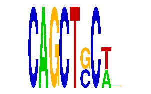

family_6 |
|---|
|  |
| Download PWM |
| Download instances (motifs) |
| Show motif distribution |
Query_ID | Query_Consensus | Subject_Name | Source_DB | Subject_ID | Length | Orientation | Offset | Divergence | Overlap | Subject_Consensus |
|---|---|---|---|---|---|---|---|---|---|---|
| family_6 | CAGCTGCTNNN | CTGCAGY | JASPAR | PF0101 | 7 | as given | -3 | 0.834 | 4 | CTGCAGC |
Sequence | Start_position (from start) | Start_position (from end) | Average conservation | Best conservation score | Instance_with_best_CS | Best_Z-score | Instance_with_best_ZS | Strand |
|---|---|---|---|---|---|---|---|---|
| chrX:139259990-139262100 | 125 | 136 | 0.219 | 0.464 | CAGCTSCW... | 14.1299925 | CAGCTSCW... | -1 |
| chr2:17460500-17461948 | 110 | 121 | 0.0550909 | 0.115 | CAGCTSCW... | 14.1299925 | CAGCTSCW... | 1 |
| chr13:59711619-59713100 | 1372 | 1383 | 0.00336364 | 0.006 | CAGCTSCW... | 14.1299925 | CAGCTSCW... | -1 |
| chr14:55626500-55627900 | 808 | 819 | 0.11 | 0.121 | CAGCTSCW... | 14.1299925 | CAGCTSCW... | 1 |
| chr2:68253215-68256600 | 3005 | 3016 | 0.001 | 0.003 | CAGCTSCW... | 14.1299925 | CAGCTSCW... | 1 |
| chr6:90814193-90815500 | 309 | 320 | 0.351818 | 0.383 | CAGCTSCW... | 14.1299925 | CAGCTSCW... | -1 |
| chr9:90996327-90997327 | 578 | 589 | 0.0192727 | 0.036 | CAGCTSCW... | 14.1299925 | CAGCTSCW... | 1 |
| chr2:113956833-113957833 | 965 | 976 | 0.000363636 | 0.002 | CAGCTSCW... | 14.1299925 | CAGCTSCW... | 1 |
| chr2:35418200-35420900 | 1762 | 1773 | 0.00581818 | 0.012 | CAGCTSCW... | 14.1299925 | CAGCTSCW... | 1 |
| chr14:32509800-32511100 | 990 | 1001 | 0.000454545 | 0.003 | CAGCTSCW... | 14.1299925 | CAGCTSCW... | 1 |
| chr1:136830500-136832300 | 1751 | 1762 | 0.00236364 | 0.006 | CAGCTSCW... | 14.1299925 | CAGCTSCW... | -1 |
| chr2:74877264-74878264 | 964 | 975 | 0.958364 | 0.987 | CAGCTSCW... | 14.1299925 | CAGCTSCW... | 1 |
| chr11:76622624-76623624 | 565 | 576 | 0.560818 | 0.568 | CAGCTSCW... | 14.1299925 | CAGCTSCW... | -1 |
| chr2:49926100-49928200 | 1914 | 1925 | 0.000636364 | 0.002 | CAGCTSCW... | 14.1299925 | CAGCTSCW... | 1 |
| chr7:17017500-17019900 | 2268 | 2279 | 0.882091 | 1 | CAGCTSCW... | 14.1299925 | CAGCTSCW... | 1 |
| chr19:21929477-21930477 | 704 | 715 | 0.884273 | 1 | CAGCTSCW... | 14.1299925 | CAGCTSCW... | -1 |
| chr18:5073600-5077590 | 1893 | 1904 | 0.000636364 | 0.003 | CAGCTSCW... | 14.1299925 | CAGCTSCW... | -1 |
| chr17:26997500-27000500 | 974 | 985 | 0.999636 | 1 | CAGCTSCW... | 14.1299925 | CAGCTSCW... | 1 |
| chr2:77019700-77021600 | 1559 | 1570 | 0.000363636 | 0.001 | CAGCTSCW... | 14.1299925 | CAGCTSCW... | 1 |
| chr13:102187516-102188800 | 1136 | 1147 | 0.0368182 | 0.064 | CAGCTSCW... | 14.1299925 | CAGCTSCW... | -1 |
| chr11:82738400-82739800 | 446 | 457 | 0.00527273 | 0.018 | CAGCTSCW... | 14.1299925 | CAGCTSCW... | 1 |
| chr4:102118500-102119700 | 43 | 54 | 0.00136364 | 0.004 | CAGCTSCW... | 14.1299925 | CAGCTSCW... | 1 |
| chr10:69324900-69326269 | 712 | 723 | 0.00109091 | 0.005 | CAGCTSCW... | 14.1299925 | CAGCTSCW... | -1 |
| chr8:37767100-37768182 | 768 | 779 | 0.999727 | 1 | CAGCTSCW... | 14.270223 | CAGCTCCARTT | 1 |
| chr2:59107800-59111773 | 663 | 674 | 0.00409091 | 0.008 | CAGCTSCW... | 14.1299925 | CAGCTSCW... | 1 |
| chr7:148085400-148087600 | 894 | 905 | 0.0784545 | 0.374 | CAGCTSCW... | 14.1299925 | CAGCTSCW... | -1 |
| chr5:20825594-20827700 | 1289 | 1300 | 0 | 0 | CAGCTSCW... | 14.1299925 | CAGCTSCW... | 1 |
| chr16:10951500-10952839 | 798 | 809 | 0.0681818 | 0.077 | CAGCTSCW... | 14.1299925 | CAGCTSCW... | -1 |
| chr4:133255000-133258678 | 2230 | 2241 | 1 | 1 | CAGCTSCW... | 14.1299925 | CAGCTSCW... | -1 |
| chr13:24616498-24618400 | 1080 | 1091 | 0.00127273 | 0.002 | CAGCTSCW... | 14.1299925 | CAGCTSCW... | 1 |
| chr1:129311900-129313031 | 1028 | 1039 | 0.0522727 | 0.061 | CAGCTSCW... | 14.1299925 | CAGCTSCW... | 1 |
| chr18:5070162-5071162 | 467 | 478 | 0.000272727 | 0.001 | CAGCTSCW... | 14.1299925 | CAGCTSCW... | -1 |
| chr9:85600563-85601563 | 515 | 526 | 0.000636364 | 0.001 | CAGCTSCW... | 14.1299925 | CAGCTSCW... | 1 |
| chr17:69517668-69519700 | 1480 | 1491 | 0.921909 | 0.966 | CAGCTSCW... | 14.1299925 | CAGCTSCW... | 1 |
| chr12:25594310-25595400 | 620 | 631 | 0.00709091 | 0.016 | CAGCTSCW... | 14.1299925 | CAGCTSCW... | -1 |
| chr18:36333900-36336000 | 791 | 802 | 0.697455 | 0.982 | CAGCTSCW... | 14.1299925 | CAGCTSCW... | 1 |
| chr1:90937791-90939100 | 782 | 793 | 0.00227273 | 0.008 | CAGCTSCW... | 14.1299925 | CAGCTSCW... | -1 |
| chr9:79791469-79793000 | 702 | 713 | 0.428 | 0.706 | CAGCTSCW... | 14.1299925 | CAGCTSCW... | -1 |
| chr1:43306927-43308800 | 328 | 339 | 0.0556364 | 0.248 | CAGCTSCW... | 14.1299925 | CAGCTSCW... | 1 |
| chr13:102255351-102256500 | 516 | 527 | 0.197182 | 0.794 | CAGCTSCW... | 14.1299925 | CAGCTSCW... | 1 |
| chr14:105801700-105803584 | 150 | 161 | 0.00981818 | 0.022 | CAGCTSCW... | 14.1299925 | CAGCTSCW... | 1 |
| chr15:95889500-95891200 | 754 | 765 | 0.0138182 | 0.023 | CAGCTSCW... | 14.1299925 | CAGCTSCW... | 1 |
| chr2:168013848-168014848 | 887 | 898 | 0.995727 | 1 | CAGCTSCW... | 14.1299925 | CAGCTSCW... | -1 |
| chr12:25672693-25673693 | 474 | 485 | 0.221545 | 0.429 | CAGCTSCW... | 14.1299925 | CAGCTSCW... | -1 |
| chr15:58113700-58116100 | 245 | 256 | 0.0791818 | 0.096 | CAGCTSCW... | 14.1299925 | CAGCTSCW... | 1 |
| chr9:66876700-66878106 | 800 | 811 | 1 | 1 | CAGCTSCW... | 14.1299925 | CAGCTSCW... | 1 |
| chr1:156981100-156985200 | 3606 | 3617 | 0.0650909 | 0.149 | CAGCTSCW... | 14.1299925 | CAGCTSCW... | -1 |
| chrX:156240328-156242200 | 560 | 571 | 0.0314545 | 0.099 | CAGCTSCW... | 14.1299925 | CAGCTSCW... | 1 |
| chr13:102707386-102708386 | 418 | 429 | 0.0742727 | 0.146 | CAGCTSCW... | 14.1299925 | CAGCTSCW... | -1 |
| chr6:71204158-71205158 | 332 | 343 | 0.00872727 | 0.016 | CAGCTSCW... | 14.1299925 | CAGCTSCW... | -1 |
| chr9:23158349-23159800 | 434 | 445 | 0.00181818 | 0.005 | CAGCTSCW... | 14.1299925 | CAGCTSCW... | -1 |
| chr1:34301000-34302200 | 207 | 218 | 0.999545 | 1 | CAGCTSCW... | 14.1299925 | CAGCTSCW... | 1 |
| chr9:67613300-67615176 | 1365 | 1376 | 0.0146364 | 0.034 | CAGCTSCW... | 14.1299925 | CAGCTSCW... | 1 |
| chr2:129696200-129698600 | 241 | 252 | 0.002 | 0.007 | CAGCTSCW... | 14.1299925 | CAGCTSCW... | 1 |
| chr1:91532800-91534631 | 1669 | 1680 | 0.111818 | 0.145 | CAGCTSCW... | 14.1299925 | CAGCTSCW... | 1 |
| chr3:105226100-105227382 | 347 | 358 | 0.00118182 | 0.002 | CAGCTSCW... | 14.1299925 | CAGCTSCW... | 1 |
| chr9:32065000-32066100 | 747 | 758 | 0.005 | 0.019 | CAGCTSCW... | 14.1299925 | CAGCTSCW... | -1 |
| chr12:10085781-10086800 | 637 | 648 | 0.389091 | 0.616 | CAGCTSCW... | 14.1299925 | CAGCTSCW... | -1 |
| chr1:74308665-74309665 | 888 | 899 | 0.0283636 | 0.095 | CAGCTSCW... | 14.1299925 | CAGCTSCW... | 1 |
| chr18:44890113-44891113 | 535 | 546 | 0.836909 | 0.992 | CAGCTSCW... | 14.1299925 | CAGCTSCW... | -1 |
| chr17:27003900-27006500 | 1757 | 1768 | 0.0252727 | 0.075 | CAGCTSCW... | 14.1299925 | CAGCTSCW... | -1 |
| chr9:115293000-115294061 | 328 | 339 | 0.0113636 | 0.05 | CAGCTSCW... | 14.1299925 | CAGCTSCW... | 1 |
| chr5:65986057-65987057 | 134 | 145 | 0.838364 | 1 | CAGCTSCW... | 14.1299925 | CAGCTSCW... | -1 |
| chr12:83095700-83097400 | 455 | 466 | 1 | 1 | CAGCTSCW... | 14.1299925 | CAGCTSCW... | 1 |
| chr19:40409400-40410700 | 819 | 830 | 0.0106364 | 0.022 | CAGCTSCW... | 14.1299925 | CAGCTSCW... | 1 |
| chr13:51250300-51252000 | 429 | 440 | 0.215364 | 0.244 | CAGCTSCW... | 14.1299925 | CAGCTSCW... | 1 |
| chr17:69801600-69804000 | 367 | 378 | 0.00354545 | 0.006 | CAGCTSCW... | 14.1299925 | CAGCTSCW... | 1 |
| chr2:18134400-18135900 | 1155 | 1166 | NA | NA | CAGCTSCW... | 14.1299925 | CAGCTSCW... | 1 |
| chr15:11519600-11520606 | 102 | 113 | 0.00336364 | 0.025 | CAGCTSCW... | 14.1299925 | CAGCTSCW... | 1 |
| chr3:51296700-51298200 | 1193 | 1204 | 0.0109091 | 0.058 | CAGCTSCW... | 14.1299925 | CAGCTSCW... | 1 |
| chr15:33526027-33527027 | 407 | 418 | 0.014 | 0.02 | CAGCTSCW... | 14.1299925 | CAGCTSCW... | -1 |
| chr13:38673800-38675400 | 998 | 1009 | 0.526636 | 0.993 | CAGCTSCW... | 14.1299925 | CAGCTSCW... | 1 |
| chr6:90836700-90838400 | 539 | 550 | 0.0117273 | 0.016 | CAGCTSCW... | 14.1299925 | CAGCTSCW... | 1 |
| chr12:83525300-83527400 | 963 | 974 | 0.983545 | 1 | CAGCTSCW... | 14.1299925 | CAGCTSCW... | 1 |
| chr1:189833400-189835595 | 525 | 536 | 0.108364 | 0.463 | CAGCTSCW... | 14.1299925 | CAGCTSCW... | -1 |
| chr2:166340000-166341500 | 401 | 412 | 0.373636 | 0.894 | CAGCTSCW... | 14.1299925 | CAGCTSCW... | 1 |
| chr5:93335900-93338500 | 1439 | 1450 | 0.00181818 | 0.004 | CAGCTSCW... | 14.1299925 | CAGCTSCW... | -1 |
| chr9:89842300-89844123 | 124 | 135 | 0.158273 | 0.278 | CAGCTSCW... | 14.1299925 | CAGCTSCW... | 1 |
| chr13:46897069-46898600 | 282 | 293 | 0.364455 | 0.53 | CAGCTSCW... | 14.1299925 | CAGCTSCW... | 1 |
| chr8:37126935-37127935 | 400 | 411 | 0.417091 | 0.846 | CAGCTSCW... | 14.1299925 | CAGCTSCW... | 1 |
| chr5:77944100-77945307 | 138 | 149 | 0.979182 | 1 | CAGCTSCW... | 14.1299925 | CAGCTSCW... | 1 |
| chr13:46602400-46605300 | 1688 | 1699 | 0.0146364 | 0.04 | CAGCTSCW... | 14.1299925 | CAGCTSCW... | 1 |
| chr13:114446600-114450900 | 377 | 388 | 0.00918182 | 0.053 | CAGCTSCW... | 14.1299925 | CAGCTSCW... | 1 |
| chr8:42077200-42078301 | 281 | 292 | 0.008 | 0.043 | CAGCTSCW... | 14.1299925 | CAGCTSCW... | -1 |
| chr11:102661600-102663900 | 347 | 358 | 0.999455 | 1 | CAGCTSCW... | 14.1299925 | CAGCTSCW... | 1 |
| chr8:109399300-109401100 | 1094 | 1105 | 0.00109091 | 0.003 | CAGCTSCW... | 14.1299925 | CAGCTSCW... | -1 |
| chr15:96218400-96220200 | 1216 | 1227 | 0.00363636 | 0.008 | CAGCTSCW... | 14.1299925 | CAGCTSCW... | 1 |
| chr2:72106700-72108720 | 1645 | 1656 | 0.0595455 | 0.16 | CAGCTSCW... | 14.1299925 | CAGCTSCW... | 1 |
| chr15:69133400-69134611 | 158 | 169 | 0.066 | 0.085 | CAGCTSCW... | 14.1299925 | CAGCTSCW... | 1 |
| chr18:79466842-79467900 | 814 | 825 | 0.999 | 1 | CAGCTSCW... | 14.1299925 | CAGCTSCW... | 1 |
| chr4:109894600-109896000 | 1079 | 1090 | 0.000363636 | 0.003 | CAGCTSCW... | 14.1299925 | CAGCTSCW... | 1 |
| chr10:8372300-8373900 | 976 | 987 | 0.000727273 | 0.003 | CAGCTSCW... | 14.1299925 | CAGCTSCW... | 1 |
| chr9:53280488-53281890 | 911 | 922 | 0.0100909 | 0.051 | CAGCTSCW... | 14.1299925 | CAGCTSCW... | 1 |
| chr5:148661430-148663100 | 533 | 544 | 0.0123636 | 0.07 | CAGCTSCW... | 14.1299925 | CAGCTSCW... | 1 |
| chr4:41202433-41203800 | 636 | 647 | 0.880455 | 0.914 | CAGCTSCW... | 14.1299925 | CAGCTSCW... | 1 |
| chr11:8447586-8449300 | 351 | 362 | 0.00272727 | 0.005 | CAGCTSCW... | 14.1299925 | CAGCTSCW... | 1 |
| chr6:100031800-100033100 | 637 | 648 | 0.001 | 0.006 | CAGCTSCW... | 14.1299925 | CAGCTSCW... | 1 |
| chrX:165101800-165102901 | 244 | 255 | 0.981 | 1 | CAGCTSCW... | 14.1299925 | CAGCTSCW... | -1 |
| chr1:189695900-189697000 | 306 | 317 | 0.172545 | 0.321 | CAGCTSCW... | 14.1299925 | CAGCTSCW... | 1 |
| chr3:127784659-127786000 | 1048 | 1059 | 0.0109091 | 0.116 | CAGCTSCW... | 14.1299925 | CAGCTSCW... | 1 |
| chr7:86179000-86182200 | 1918 | 1929 | 0.0360909 | 0.05 | CAGCTSCW... | 14.1299925 | CAGCTSCW... | 1 |
| chr18:11387554-11389100 | 227 | 238 | 0.00536364 | 0.012 | CAGCTSCW... | 14.1299925 | CAGCTSCW... | 1 |
| chr18:54962500-54963670 | 391 | 402 | 0.00127273 | 0.006 | CAGCTSCW... | 14.1299925 | CAGCTSCW... | 1 |
| chr16:22698500-22700300 | 1710 | 1721 | 0.000545455 | 0.002 | CAGCTSCW... | 14.1299925 | CAGCTSCW... | 1 |
| chr16:22564000-22565700 | 893 | 904 | 0.00645455 | 0.019 | CAGCTSCW... | 14.1299925 | CAGCTSCW... | 1 |
| chr9:29095200-29098000 | 1571 | 1582 | 0.000636364 | 0.002 | CAGCTSCW... | 14.1299925 | CAGCTSCW... | -1 |
| chr13:12370800-12372686 | 251 | 262 | 0.630273 | 1 | CAGCTSCW... | 14.1299925 | CAGCTSCW... | -1 |
| chr5:75579700-75581037 | 324 | 335 | 0.00145455 | 0.003 | CAGCTSCW... | 14.1299925 | CAGCTSCW... | 1 |
| chr3:21167100-21168500 | 57 | 68 | 0.448545 | 0.812 | CAGCTSCW... | 14.1299925 | CAGCTSCW... | 1 |
| chr13:72507000-72509800 | 151 | 162 | 0.021 | 0.04 | CAGCTSCW... | 14.1299925 | CAGCTSCW... | 1 |
| chr3:144124900-144126600 | 144 | 155 | 0.0129091 | 0.033 | CAGCTSCW... | 14.1299925 | CAGCTSCW... | 1 |
| chr3:9461188-9463100 | 572 | 583 | 0.854909 | 0.924 | CAGCTSCW... | 14.1299925 | CAGCTSCW... | 1 |
| chr15:33598200-33599584 | 834 | 845 | NA | NA | CAGCTSCW... | 14.1299925 | CAGCTSCW... | 1 |
| chr6:84133200-84134842 | 145 | 156 | 0.00163636 | 0.016 | CAGCTSCW... | 14.1299925 | CAGCTSCW... | -1 |
| chr19:26045152-26046300 | 480 | 491 | 0.580273 | 0.994 | CAGCTSCW... | 14.1299925 | CAGCTSCW... | -1 |
| chr8:28033200-28034404 | 763 | 774 | 0.0185455 | 0.031 | CAGCTSCW... | 14.1299925 | CAGCTSCW... | 1 |
| chr7:37742700-37744139 | 847 | 858 | 0.994818 | 1 | CAGCTSCW... | 14.1299925 | CAGCTSCW... | 1 |
| chr9:67436000-67438500 | 2000 | 2011 | NA | NA | CAGCTSCW... | 14.1299925 | CAGCTSCW... | 1 |
| chr1:136742494-136744800 | 933 | 944 | 0.335818 | 0.647 | CAGCTSCW... | 14.1299925 | CAGCTSCW... | 1 |
| chr5:104015700-104016900 | 825 | 836 | 0.0121818 | 0.021 | CAGCTSCW... | 14.1299925 | CAGCTSCW... | 1 |
| chr5:66236900-66239200 | 204 | 215 | 0.0281818 | 0.063 | CAGCTSCW... | 14.1299925 | CAGCTSCW... | -1 |
| chr11:54874000-54877200 | 653 | 664 | 0.0229091 | 0.042 | CAGCTSCW... | 14.1299925 | CAGCTSCW... | 1 |
| chr6:30179900-30181095 | 115 | 126 | 0.0257273 | 0.034 | CAGCTSCW... | 14.1299925 | CAGCTSCW... | 1 |
| chr5:91991500-91993677 | 551 | 562 | 0.0118182 | 0.027 | CAGCTSCW... | 14.1299925 | CAGCTSCW... | 1 |
| chrX:6502716-6503716 | 182 | 193 | 0.0271818 | 0.116 | CAGCTSCW... | 14.1299925 | CAGCTSCW... | 1 |
| chr6:93264500-93265554 | 754 | 765 | 0.0172727 | 0.022 | CAGCTSCW... | 14.1299925 | CAGCTSCW... | 1 |
| chr17:26933700-26935400 | 1041 | 1052 | 0.00345455 | 0.008 | CAGCTSCW... | 14.1299925 | CAGCTSCW... | 1 |
| chr15:76946500-76948697 | 2042 | 2053 | 0.00418182 | 0.013 | CAGCTSCW... | 14.1299925 | CAGCTSCW... | 1 |
| chr1:73235377-73236377 | 332 | 343 | 0.00872727 | 0.027 | CAGCTSCW... | 14.1299925 | CAGCTSCW... | 1 |
| chr3:81860802-81862900 | 589 | 600 | 0.143545 | 0.833 | CAGCTSCW... | 14.1299925 | CAGCTSCW... | 1 |
| chr8:36189100-36190800 | 633 | 644 | 0.0444545 | 0.196 | CAGCTSCW... | 14.1299925 | CAGCTSCW... | -1 |
| chr4:87429587-87430587 | 325 | 336 | 0.903182 | 0.996 | CAGCTSCW... | 14.1299925 | CAGCTSCW... | -1 |
| chr2:64931905-64933640 | 349 | 360 | 0.0539091 | 0.093 | CAGCTSCW... | 14.1299925 | CAGCTSCW... | 1 |
| chr3:126481567-126483903 | 1743 | 1754 | 0.999545 | 1 | CAGCTSCW... | 14.1299925 | CAGCTSCW... | -1 |
| chr9:77475900-77477700 | 620 | 631 | 0.0112727 | 0.02 | CAGCTSCW... | 14.1299925 | CAGCTSCW... | -1 |
| chr5:122543271-122546700 | 637 | 648 | 0.00109091 | 0.009 | CAGCTSCW... | 14.1299925 | CAGCTSCW... | -1 |
| chr11:74569689-74570900 | 522 | 533 | 0.00136364 | 0.005 | CAGCTSCW... | 14.1299925 | CAGCTSCW... | -1 |
| chr1:33953000-33954900 | 1209 | 1220 | 0.00536364 | 0.017 | CAGCTSCW... | 14.1299925 | CAGCTSCW... | -1 |
| chr2:59115600-59118000 | 531 | 542 | 0.240545 | 0.701 | CAGCTSCW... | 14.1299925 | CAGCTSCW... | 1 |
| chr10:6924700-6926457 | 376 | 387 | 0.000909091 | 0.009 | CAGCTSCW... | 14.1299925 | CAGCTSCW... | 1 |
| chr8:119716200-119719130 | 630 | 641 | 0.0722727 | 0.097 | CAGCTSCW... | 14.1299925 | CAGCTSCW... | -1 |
| chr8:37128900-37131100 | 766 | 777 | 0.173636 | 0.293 | CAGCTSCW... | 14.1299925 | CAGCTSCW... | 1 |
| chr3:95845900-95847254 | 626 | 637 | 0.00245455 | 0.017 | CAGCTSCW... | 14.1299925 | CAGCTSCW... | 1 |
| chr3:87969600-87971100 | 401 | 412 | 0.00872727 | 0.016 | CAGCTSCW... | 14.1299925 | CAGCTSCW... | 1 |
| chr3:79628987-79630200 | 164 | 175 | 0.000272727 | 0.001 | CAGCTSCW... | 14.1299925 | CAGCTSCW... | 1 |
| chr2:76882377-76883377 | 338 | 349 | 0.999727 | 1 | CAGCTSCW... | 14.1299925 | CAGCTSCW... | -1 |
| chr6:116104554-116105554 | 978 | 989 | 0.108455 | 0.145 | CAGCTSCW... | 14.1299925 | CAGCTSCW... | -1 |
| chr17:27009000-27012400 | 2490 | 2501 | 0.326909 | 0.868 | CAGCTSCW... | 14.1299925 | CAGCTSCW... | 1 |
| chr3:21394818-21396700 | 1265 | 1276 | 0.000181818 | 0.001 | CAGCTSCW... | 14.1299925 | CAGCTSCW... | 1 |
| chr5:93251500-93254600 | 728 | 739 | 0.00418182 | 0.013 | CAGCTSCW... | 14.1299925 | CAGCTSCW... | 1 |
| chr10:52896500-52897547 | 594 | 605 | 0.012 | 0.018 | CAGCTSCW... | 14.1299925 | CAGCTSCW... | -1 |
| chr6:97834758-97836300 | 912 | 923 | 0.00327273 | 0.007 | CAGCTSCW... | 14.1299925 | CAGCTSCW... | 1 |
| chr17:65450067-65451067 | 482 | 493 | 0.000454545 | 0.001 | CAGCTSCW... | 14.1299925 | CAGCTSCW... | 1 |
| chr5:92005401-92008500 | 1946 | 1957 | 0.0129091 | 0.039 | CAGCTSCW... | 14.1299925 | CAGCTSCW... | -1 |
| chr19:46486100-46488100 | 159 | 170 | 0.00572727 | 0.022 | CAGCTSCW... | 14.1299925 | CAGCTSCW... | 1 |
| chr2:148428600-148430135 | 164 | 175 | 0.00327273 | 0.015 | CAGCTSCW... | 14.1299925 | CAGCTSCW... | -1 |
| chr2:68052000-68054200 | 335 | 346 | 0.002 | 0.005 | CAGCTSCW... | 14.1299925 | CAGCTSCW... | -1 |
| chr19:24038700-24039833 | 665 | 676 | 0.601455 | 0.676 | CAGCTSCW... | 14.1299925 | CAGCTSCW... | 1 |
| chr13:74499900-74502000 | 764 | 775 | 0.945455 | 1 | CAGCTSCW... | 14.1299925 | CAGCTSCW... | 1 |
| chr6:140518167-140519167 | 523 | 534 | 1 | 1 | CAGCTSCW... | 14.1299925 | CAGCTSCW... | 1 |
| chr5:122945778-122947627 | 187 | 198 | 0.0811818 | 0.549 | CAGCTSCW... | 14.1299925 | CAGCTSCW... | 1 |
| chr2:101722900-101723918 | 515 | 526 | 0.677 | 0.967 | CAGCTSCW... | 14.1299925 | CAGCTSCW... | 1 |
| chr9:41463600-41465207 | 245 | 256 | 0.0650909 | 0.136 | CAGCTSCW... | 14.1299925 | CAGCTSCW... | -1 |
| chr14:35041400-35043000 | 227 | 238 | 0.000363636 | 0.002 | CAGCTSCW... | 14.1299925 | CAGCTSCW... | 1 |
| chr16:58427500-58429701 | 1670 | 1681 | 0.005 | 0.009 | CAGCTSCW... | 14.1299925 | CAGCTSCW... | -1 |
| chr1:159337597-159338597 | 488 | 499 | 0.0130909 | 0.035 | CAGCTSCW... | 14.1299925 | CAGCTSCW... | -1 |
| chr1:166473000-166474205 | 142 | 153 | 0.00181818 | 0.004 | CAGCTSCW... | 14.1299925 | CAGCTSCW... | 1 |
| chr4:57591900-57593700 | 822 | 833 | 0.0121818 | 0.026 | CAGCTSCW... | 14.1299925 | CAGCTSCW... | 1 |
| chr1:191750200-191751700 | 245 | 256 | 0.305818 | 0.399 | CAGCTSCW... | 14.1299925 | CAGCTSCW... | 1 |
| chr15:68436379-68437379 | 731 | 742 | 0.000545455 | 0.002 | CAGCTSCW... | 14.1299925 | CAGCTSCW... | 1 |
| chr9:79884112-79885900 | 316 | 327 | 0.683727 | 0.729 | CAGCTSCW... | 14.1299925 | CAGCTSCW... | 1 |
| chr5:72904900-72906004 | 285 | 296 | 0.520636 | 0.952 | CAGCTSCW... | 14.1299925 | CAGCTSCW... | 1 |
| chr2:76647544-76649500 | 553 | 564 | 0.959545 | 1 | CAGCTSCW... | 14.1299925 | CAGCTSCW... | 1 |
| chr8:35815300-35817200 | 1781 | 1792 | 0.0251818 | 0.046 | CAGCTSCW... | 14.1299925 | CAGCTSCW... | 1 |
| chr13:101676000-101677007 | 420 | 431 | 0.00118182 | 0.003 | CAGCTSCW... | 14.1299925 | CAGCTSCW... | -1 |
| chr12:118869943-118871400 | 1172 | 1183 | 0.000545455 | 0.001 | CAGCTSCW... | 14.1299925 | CAGCTSCW... | 1 |
| chr8:24410933-24412600 | 1629 | 1640 | 0.001 | 0.005 | CAGCTSCW... | 14.1299925 | CAGCTSCW... | 1 |
| chr6:17126621-17128376 | 792 | 803 | 0.462455 | 0.603 | CAGCTSCW... | 14.1299925 | CAGCTSCW... | 1 |
| chr8:75111100-75112500 | 644 | 655 | 0.0101818 | 0.015 | CAGCTSCW... | 14.1299925 | CAGCTSCW... | -1 |
| chr10:76064800-76066300 | 701 | 712 | 0.0242727 | 0.06 | CAGCTSCW... | 14.1299925 | CAGCTSCW... | 1 |
| chr16:52178500-52180676 | 553 | 564 | 0.000363636 | 0.001 | CAGCTSCW... | 14.1299925 | CAGCTSCW... | -1 |
| chr3:27401400-27404440 | 318 | 329 | 0.000636364 | 0.003 | CAGCTSCW... | 14.1299925 | CAGCTSCW... | 1 |
| chr13:113017777-113018900 | 443 | 454 | 0.904182 | 1 | CAGCTSCW... | 14.1299925 | CAGCTSCW... | 1 |
| chr7:144043045-144044900 | 591 | 602 | 0.001 | 0.004 | CAGCTSCW... | 14.1299925 | CAGCTSCW... | 1 |
| chr3:127228213-127230239 | 288 | 299 | 0.0101818 | 0.02 | CAGCTSCW... | 14.1299925 | CAGCTSCW... | 1 |
| chr5:113405400-113407400 | 1695 | 1706 | NA | NA | CAGCTSCW... | 14.1299925 | CAGCTSCW... | -1 |
| chr13:46706083-46707200 | 557 | 568 | 0.000727273 | 0.002 | CAGCTSCW... | 14.1299925 | CAGCTSCW... | -1 |
| chr1:51836200-51837491 | 562 | 573 | 0.000181818 | 0.001 | CAGCTSCW... | 14.1299925 | CAGCTSCW... | 1 |
| chr13:47224000-47225700 | 977 | 988 | 0.208545 | 0.259 | CAGCTSCW... | 14.1299925 | CAGCTSCW... | 1 |
| chr9:32033967-32034967 | 927 | 938 | 0.256091 | 0.397 | CAGCTSCW... | 14.1299925 | CAGCTSCW... | -1 |
| chr11:12126740-12128500 | 935 | 946 | 0.00354545 | 0.011 | CAGCTSCW... | 14.1299925 | CAGCTSCW... | 1 |
| chr6:115958862-115960000 | 282 | 293 | 0.0161818 | 0.023 | CAGCTSCW... | 14.1299925 | CAGCTSCW... | 1 |
| chr11:7738200-7739242 | 748 | 759 | 0.008 | 0.014 | CAGCTSCW... | 14.1299925 | CAGCTSCW... | -1 |
| chr7:81609000-81611200 | 1338 | 1349 | 0.0169091 | 0.101 | CAGCTSCW... | 14.1299925 | CAGCTSCW... | -1 |
| chr16:94942000-94944600 | 1043 | 1054 | 0.000727273 | 0.002 | CAGCTSCW... | 14.1299925 | CAGCTSCW... | 1 |
| chr5:120310400-120312900 | 950 | 961 | 0.000272727 | 0.002 | CAGCTSCW... | 14.1299925 | CAGCTSCW... | -1 |
| chr19:25325000-25326900 | 288 | 299 | 0.257727 | 0.405 | CAGCTSCW... | 14.1299925 | CAGCTSCW... | -1 |
| chr13:38025300-38027374 | 554 | 565 | 0.125545 | 0.186 | CAGCTSCW... | 14.1299925 | CAGCTSCW... | 1 |
| chr8:36484200-36485247 | 696 | 707 | 0.117364 | 0.154 | CAGCTSCW... | 14.1299925 | CAGCTSCW... | 1 |
| chr15:27674300-27676100 | 1189 | 1200 | 0.000545455 | 0.002 | CAGCTSCW... | 14.1299925 | CAGCTSCW... | 1 |
| chr10:60463700-60465700 | 733 | 744 | 0.0296364 | 0.046 | CAGCTSCW... | 14.1299925 | CAGCTSCW... | -1 |
| chr11:109502500-109504100 | 399 | 410 | NA | NA | CAGCTSCW... | 14.1299925 | CAGCTSCW... | -1 |
| chr13:46521359-46522359 | 943 | 954 | 0.796273 | 1 | CAGCTSCW... | 14.1299925 | CAGCTSCW... | 1 |
| chr4:137743300-137745100 | 859 | 870 | 0.00390909 | 0.033 | CAGCTSCW... | 14.1299925 | CAGCTSCW... | 1 |
| chr6:94360155-94361300 | 54 | 65 | 0.0519091 | 0.155 | CAGCTSCW... | 14.1299925 | CAGCTSCW... | -1 |
| chr6:32946423-32948300 | 1289 | 1300 | 0.009 | 0.025 | CAGCTSCW... | 14.1299925 | CAGCTSCW... | -1 |
| chr1:109541500-109542692 | 433 | 444 | 0.995364 | 0.998 | CAGCTSCW... | 14.1299925 | CAGCTSCW... | 1 |
| chr1:187134900-187136597 | 254 | 265 | 0.242727 | 0.329 | CAGCTSCW... | 14.1299925 | CAGCTSCW... | -1 |
| chr6:119143973-119145300 | 725 | 736 | 0.00763636 | 0.017 | CAGCTSCW... | 14.1299925 | CAGCTSCW... | 1 |
| chr8:94083200-94084900 | 775 | 786 | 0.055 | 0.433 | CAGCTSCW... | 14.1299925 | CAGCTSCW... | 1 |
| chr4:147335900-147338900 | 1222 | 1233 | 0.000454545 | 0.001 | CAGCTSCW... | 14.1299925 | CAGCTSCW... | -1 |
| chr11:64882200-64884300 | 1857 | 1868 | 0.00336364 | 0.036 | CAGCTSCW... | 14.1299925 | CAGCTSCW... | 1 |
| chr17:32519900-32522300 | 661 | 672 | 0.966364 | 0.99 | CAGCTSCW... | 14.1299925 | CAGCTSCW... | 1 |
| chr9:97045826-97048200 | 87 | 98 | 0.498 | 0.999 | CAGCTSCW... | 14.1299925 | CAGCTSCW... | 1 |
| chr4:56891900-56894200 | 108 | 119 | 0.006 | 0.011 | CAGCTSCW... | 14.1299925 | CAGCTSCW... | -1 |
| chr4:83546800-83548339 | 542 | 553 | 0.00609091 | 0.02 | CAGCTSCW... | 14.1299925 | CAGCTSCW... | 1 |
| chr6:99179200-99180406 | 706 | 717 | 0.0235455 | 0.089 | CAGCTSCW... | 14.1299925 | CAGCTSCW... | -1 |
| chr16:78274874-78276000 | 666 | 677 | 0.0745455 | 0.08 | CAGCTCCARTT | 14.1299925 | CAGCTSCW... | 1 |
| chr9:24696343-24697800 | 817 | 828 | 0.0116364 | 0.018 | CAGCTSCW... | 14.1299925 | CAGCTSCW... | -1 |
| chr18:11692600-11694168 | 1523 | 1534 | 0.00281818 | 0.005 | CAGCTSCW... | 14.1299925 | CAGCTSCW... | 1 |
| chr13:39092786-39094000 | 652 | 663 | 0.0638182 | 0.183 | CAGCTSCW... | 14.1299925 | CAGCTSCW... | -1 |
| chr9:23199097-23200097 | 360 | 371 | 0.00518182 | 0.012 | CAGCTSCW... | 14.1299925 | CAGCTSCW... | -1 |
| chr17:26978775-26980200 | 1223 | 1234 | 0.00136364 | 0.003 | CAGCTSCW... | 14.1299925 | CAGCTSCW... | 1 |
| chr10:20287750-20289364 | 328 | 339 | 0.0618182 | 0.105 | CAGCTSCW... | 14.1299925 | CAGCTSCW... | 1 |
| chr16:38106455-38107600 | 435 | 446 | 0.00218182 | 0.006 | CAGCTSCW... | 14.1299925 | CAGCTSCW... | 1 |
| chr14:55583700-55589300 | 259 | 270 | 0.00154545 | 0.005 | CAGCTSCW... | 14.1299925 | CAGCTSCW... | 1 |
| chr9:48322800-48324528 | 1092 | 1103 | 0.00745455 | 0.016 | CAGCTSCW... | 14.1299925 | CAGCTSCW... | 1 |
| chr11:32852000-32854200 | 631 | 642 | 0.0325455 | 0.055 | CAGCTSCW... | 14.1299925 | CAGCTSCW... | -1 |
| chr7:82549829-82551200 | 128 | 139 | 0.176727 | 0.914 | CAGCTSCW... | 14.1299925 | CAGCTSCW... | 1 |
| chr1:136238100-136239343 | 392 | 403 | 0.303273 | 0.72 | CAGCTSCW... | 14.1299925 | CAGCTSCW... | -1 |
| chr8:59833341-59834341 | 366 | 377 | 0.00154545 | 0.005 | CAGCTSCW... | 14.1299925 | CAGCTSCW... | 1 |
| chr3:65411900-65413214 | 1065 | 1076 | 0.0312727 | 0.081 | CAGCTSCW... | 14.1299925 | CAGCTSCW... | -1 |
| chr6:136645400-136648500 | 1019 | 1030 | 0.850091 | 1 | CAGCTSCW... | 14.1299925 | CAGCTSCW... | 1 |
| chr8:34902160-34904200 | 1131 | 1142 | 0.183182 | 0.354 | CAGCTSCW... | 14.1299925 | CAGCTSCW... | -1 |
| chr10:116478300-116480100 | 452 | 463 | 0.320091 | 0.541 | CAGCTSCW... | 14.1299925 | CAGCTSCW... | 1 |
| chr13:94089924-94091000 | 347 | 358 | 0.00772727 | 0.032 | CAGCTSCW... | 14.1299925 | CAGCTSCW... | -1 |
| chr1:23121800-23123300 | 1239 | 1250 | 0.0312727 | 0.039 | CAGCTSCW... | 14.1299925 | CAGCTSCW... | -1 |
| chr8:35030809-35033700 | 1192 | 1203 | 0.108909 | 0.187 | CAGCTSCW... | 14.1299925 | CAGCTSCW... | -1 |
| chr3:27475300-27477400 | 1091 | 1102 | 0.00181818 | 0.004 | CAGCTSCW... | 14.1299925 | CAGCTSCW... | -1 |
| chr1:43215700-43218157 | 742 | 753 | 0.217 | 0.398 | CAGCTSCW... | 14.1299925 | CAGCTSCW... | 1 |
| chr5:114622643-114624500 | 1592 | 1603 | 0.0364545 | 0.067 | CAGCTSCW... | 14.1299925 | CAGCTSCW... | 1 |
| chr4:57203200-57205668 | 1739 | 1750 | 0.00154545 | 0.004 | CAGCTSCW... | 14.1299925 | CAGCTSCW... | 1 |
| chr2:84439200-84440319 | 818 | 829 | 0.00445455 | 0.011 | CAGCTSCW... | 14.1299925 | CAGCTSCW... | 1 |
| chr2:167895700-167896800 | 532 | 543 | NA | NA | CAGCTSCW... | 14.1299925 | CAGCTSCW... | -1 |
| chr1:141224600-141225612 | 506 | 517 | 0.496636 | 1 | CAGCTSCW... | 14.1299925 | CAGCTSCW... | 1 |
| chr12:74830200-74831391 | 782 | 793 | 0.00372727 | 0.021 | CAGCTSCW... | 14.1299925 | CAGCTSCW... | -1 |
| chr16:18523517-18524700 | 329 | 340 | 0.0573636 | 0.095 | CAGCTSCW... | 14.1299925 | CAGCTSCW... | -1 |
| chr16:5847600-5849800 | 195 | 206 | 0.000272727 | 0.001 | CAGCTSCW... | 14.1299925 | CAGCTSCW... | -1 |
| chr1:43201300-43203046 | 249 | 260 | 0.001 | 0.002 | CAGCTSCW... | 14.1299925 | CAGCTSCW... | 1 |
| chr14:47715000-47717400 | 1998 | 2009 | 0.00154545 | 0.003 | CAGCTSCW... | 14.1299925 | CAGCTSCW... | 1 |
| chr16:57356100-57357600 | 372 | 383 | 0.0441818 | 0.063 | CAGCTSCW... | 14.1299925 | CAGCTSCW... | 1 |
| chr2:4349189-4350189 | 339 | 350 | 0.999455 | 1 | CAGCTSCW... | 14.1299925 | CAGCTSCW... | -1 |
| chr14:102265200-102267500 | 1567 | 1578 | 0.0399091 | 0.07 | CAGCTSCW... | 14.1299925 | CAGCTSCW... | -1 |
| chr6:94815000-94817300 | 1108 | 1119 | 0.869909 | 0.994 | CAGCTSCW... | 14.1299925 | CAGCTSCW... | 1 |
| chr2:74873800-74875500 | 1650 | 1661 | 0.253455 | 0.897 | CAGCTSCW... | 14.1299925 | CAGCTSCW... | 1 |
| chr6:90809600-90812700 | 2479 | 2490 | 0.0230909 | 0.054 | CAGCTSCW... | 14.1299925 | CAGCTSCW... | -1 |
| chr8:13242700-13244900 | 62 | 73 | 0.00890909 | 0.031 | CAGCTSCW... | 14.1299925 | CAGCTSCW... | 1 |
| chr13:46523300-46527822 | 1220 | 1231 | 0.884 | 1 | CAGCTSCW... | 14.1299925 | CAGCTSCW... | 1 |
| chr14:55598385-55599400 | 792 | 803 | 0.943727 | 1 | CAGCTSCW... | 14.1299925 | CAGCTSCW... | -1 |
| chr18:14397600-14399800 | 120 | 131 | 0.127273 | 0.269 | CAGCTSCW... | 14.1299925 | CAGCTSCW... | 1 |
| chr1:133060400-133061419 | 626 | 637 | 1 | 1 | CAGCTSCW... | 14.1299925 | CAGCTSCW... | -1 |
| chr8:70444700-70445925 | 399 | 410 | 0.303182 | 0.483 | CAGCTSCW... | 14.1299925 | CAGCTSCW... | 1 |
| chr19:55406000-55407147 | 818 | 829 | 0.0201818 | 0.045 | CAGCTSCW... | 14.1299925 | CAGCTSCW... | -1 |
| chr8:46972802-46974502 | 1394 | 1405 | 0.0741818 | 0.081 | CAGCTSCW... | 14.1299925 | CAGCTSCW... | 1 |
| chr16:43579210-43581300 | 230 | 241 | 0.579727 | 0.869 | CAGCTSCW... | 14.1299925 | CAGCTSCW... | -1 |
| chr17:9599800-9601200 | 971 | 982 | 0.000909091 | 0.005 | CAGCTSCW... | 14.1299925 | CAGCTSCW... | 1 |
| chr16:91853000-91854900 | 1726 | 1737 | 0.00763636 | 0.019 | CAGCTSCW... | 14.1299925 | CAGCTSCW... | -1 |
| chr9:32130900-32132319 | 703 | 714 | 0.00136364 | 0.008 | CAGCTSCW... | 14.1299925 | CAGCTSCW... | 1 |
| chr10:96104700-96105759 | 511 | 522 | 0.299091 | 0.325 | CAGCTSCW... | 14.1299925 | CAGCTSCW... | -1 |
| chr10:63520844-63522000 | 648 | 659 | 0.0618182 | 0.17 | CAGCTSCW... | 14.1299925 | CAGCTSCW... | 1 |
| chr19:22984400-22985946 | 1188 | 1199 | 0.0283636 | 0.142 | CAGCTSCW... | 14.1299925 | CAGCTSCW... | 1 |
| chrX:99208600-99210900 | 1712 | 1723 | 0.00336364 | 0.011 | CAGCTSCW... | 14.1299925 | CAGCTSCW... | 1 |
| chr12:76652600-76653800 | 832 | 843 | 0.001 | 0.002 | CAGCTSCW... | 14.1299925 | CAGCTSCW... | 1 |
| chr2:78915500-78916937 | 1076 | 1087 | 0.0372727 | 0.111 | CAGCTSCW... | 14.1299925 | CAGCTSCW... | 1 |
| chr5:31418400-31419600 | 663 | 674 | 0.00318182 | 0.011 | CAGCTSCW... | 14.1299925 | CAGCTSCW... | -1 |
| chr10:70000300-70001628 | 835 | 846 | 0.00281818 | 0.007 | CAGCTSCW... | 14.1299925 | CAGCTSCW... | -1 |
| chr5:123813300-123815478 | 915 | 926 | 0.00354545 | 0.007 | CAGCTSCW... | 14.1299925 | CAGCTSCW... | -1 |
| chr19:53789700-53792600 | 611 | 622 | 0.00127273 | 0.007 | CAGCTSCW... | 14.1299925 | CAGCTSCW... | -1 |
| chr6:98747400-98748464 | 515 | 526 | 0.0114545 | 0.026 | CAGCTSCW... | 14.1299925 | CAGCTSCW... | -1 |
| chr2:17545474-17547000 | 297 | 308 | 0.431091 | 0.971 | CAGCTSCW... | 14.1299925 | CAGCTSCW... | -1 |
| chr12:53900200-53902100 | 745 | 756 | 0.0387273 | 0.092 | CAGCTSCW... | 14.1299925 | CAGCTSCW... | 1 |
| chr4:57594100-57595600 | 648 | 659 | 0.00618182 | 0.024 | CAGCTSCW... | 14.1299925 | CAGCTSCW... | -1 |
| chr6:97805500-97807000 | 138 | 149 | 0.147545 | 0.227 | CAGCTSCW... | 14.1299925 | CAGCTSCW... | -1 |
| chr8:13215985-13217500 | 437 | 448 | NA | NA | CAGCTSCW... | 14.1299925 | CAGCTSCW... | 1 |
| chr8:37457075-37458300 | 742 | 753 | 0.00154545 | 0.005 | CAGCTSCW... | 14.1299925 | CAGCTSCW... | -1 |
| chr13:63071421-63074000 | 1290 | 1301 | 0.0130909 | 0.034 | CAGCTSCW... | 14.1299925 | CAGCTSCW... | 1 |
| chrX:156380730-156381730 | 231 | 242 | 0.0576364 | 0.096 | CAGCTSCW... | 14.1299925 | CAGCTSCW... | 1 |
| chr11:65114800-65118700 | 1377 | 1388 | 0.000727273 | 0.002 | CAGCTSCW... | 14.1299925 | CAGCTSCW... | 1 |
| chr8:59361700-59363055 | 785 | 796 | 0.707273 | 1 | CAGCTSCW... | 14.1299925 | CAGCTSCW... | 1 |
| chr4:13252500-13253700 | 437 | 448 | 0.00272727 | 0.004 | CAGCTSCW... | 14.1299925 | CAGCTSCW... | 1 |
| chr15:88850600-88852000 | 524 | 535 | 0.000181818 | 0.002 | CAGCTSCW... | 14.1299925 | CAGCTSCW... | -1 |
| chr4:56881300-56882500 | 524 | 535 | 0.169909 | 0.432 | CAGCTSCW... | 14.1299925 | CAGCTSCW... | -1 |
| chr8:84710783-84712300 | 552 | 563 | 0.000909091 | 0.003 | CAGCTSCW... | 14.1299925 | CAGCTSCW... | 1 |
| chr2:115894802-115895802 | 742 | 753 | 1 | 1 | CAGCTSCW... | 14.1299925 | CAGCTSCW... | -1 |
| chr5:123009700-123012200 | 170 | 181 | 0.00181818 | 0.006 | CAGCTSCW... | 14.1299925 | CAGCTSCW... | 1 |
| chr1:74302500-74304300 | 977 | 988 | 0.0231818 | 0.134 | CAGCTSCW... | 14.1299925 | CAGCTSCW... | -1 |
| chr6:97818729-97820600 | 948 | 959 | 0.0278182 | 0.042 | CAGCTSCW... | 14.1299925 | CAGCTSCW... | -1 |
| chr9:50671772-50673460 | 542 | 553 | 0.533091 | 0.57 | CAGCTSCW... | 14.1299925 | CAGCTSCW... | -1 |
| chr11:63032700-63035500 | 55 | 66 | 0.00454545 | 0.014 | CAGCTSCW... | 14.1299925 | CAGCTSCW... | 1 |
| chr2:180096300-180099000 | 381 | 392 | 0.678818 | 0.746 | CAGCTSCW... | 14.1299925 | CAGCTSCW... | 1 |
| chr18:61787284-61788500 | 650 | 661 | 0.0121818 | 0.023 | CAGCTSCW... | 14.1299925 | CAGCTSCW... | 1 |
| chr12:71828300-71829900 | 294 | 305 | 0.03 | 0.053 | CAGCTSCW... | 14.1299925 | CAGCTSCW... | -1 |
| chr11:58822600-58825000 | 692 | 703 | 0.112455 | 0.188 | CAGCTSCW... | 14.1299925 | CAGCTSCW... | 1 |
| chr5:93431100-93433019 | 1820 | 1831 | 0.997 | 1 | CAGCTSCW... | 14.1299925 | CAGCTSCW... | -1 |
| chr16:43431600-43432783 | 765 | 776 | 0.00127273 | 0.003 | CAGCTSCW... | 14.1299925 | CAGCTSCW... | -1 |
| chr7:39002100-39003506 | 314 | 325 | 0.000909091 | 0.002 | CAGCTSCW... | 14.1299925 | CAGCTSCW... | 1 |
| chr10:30753915-30754915 | 770 | 781 | 0.986 | 1 | CAGCTSCW... | 14.1299925 | CAGCTSCW... | 1 |
| chr3:79752580-79753580 | 134 | 145 | 0.000818182 | 0.004 | CAGCTSCW... | 14.1299925 | CAGCTSCW... | 1 |
| chrX:91623173-91624700 | 1119 | 1130 | 0.003 | 0.013 | CAGCTSCW... | 14.1299925 | CAGCTSCW... | 1 |
| chr11:61174889-61175900 | 740 | 751 | 0.000909091 | 0.002 | CAGCTSCW... | 14.1299925 | CAGCTSCW... | 1 |
| chr1:133125276-133128123 | 1372 | 1383 | 0.0764545 | 0.245 | CAGCTSCW... | 14.1299925 | CAGCTSCW... | 1 |
| chr5:72771747-72773200 | 1207 | 1218 | 0.003 | 0.006 | CAGCTSCW... | 14.1299925 | CAGCTSCW... | 1 |
| chr9:29143800-29145805 | 62 | 73 | 0.00354545 | 0.006 | CAGCTSCW... | 14.1299925 | CAGCTSCW... | 1 |
| chr7:73891800-73892900 | 369 | 380 | 0.00654545 | 0.013 | CAGCTSCW... | 14.1299925 | CAGCTSCW... | -1 |
| chr17:89039500-89040690 | 249 | 260 | NA | NA | CAGCTSCW... | 14.1299925 | CAGCTSCW... | 1 |
| chr12:15855200-15857067 | 766 | 777 | 0.0903636 | 0.107 | CAGCTSCW... | 14.1299925 | CAGCTSCW... | -1 |
| chrX:99076582-99078200 | 1015 | 1026 | 0.706909 | 0.913 | CAGCTSCW... | 14.1299925 | CAGCTSCW... | 1 |
| chr1:177976100-177978200 | 1119 | 1130 | 0.00209091 | 0.004 | CAGCTSCW... | 14.1299925 | CAGCTSCW... | 1 |
| chr1:189257700-189259500 | 475 | 486 | 0.0115455 | 0.04 | CAGCTSCW... | 14.1299925 | CAGCTSCW... | 1 |
| chr2:35008800-35010649 | 1227 | 1238 | 0.0778182 | 0.107 | CAGCTSCW... | 14.1299925 | CAGCTSCW... | 1 |
| chr9:66881000-66882300 | 343 | 354 | 0.000363636 | 0.003 | CAGCTSCW... | 14.1299925 | CAGCTSCW... | -1 |
| chr13:98324371-98325371 | 552 | 563 | 0.00363636 | 0.015 | CAGCTSCW... | 14.1299925 | CAGCTSCW... | -1 |
| chr1:187098700-187099714 | 167 | 178 | 0.0286364 | 0.05 | CAGCTSCW... | 14.1299925 | CAGCTSCW... | 1 |
| chr12:85713900-85715820 | 1263 | 1274 | 0.732545 | 0.837 | CAGCTSCW... | 14.1299925 | CAGCTSCW... | 1 |
| chr1:40860200-40863300 | 2205 | 2216 | 0.961182 | 1 | CAGCTSCW... | 14.1299925 | CAGCTSCW... | 1 |
| chr13:73307300-73308628 | 545 | 556 | 0.00109091 | 0.003 | CAGCTSCW... | 14.1299925 | CAGCTSCW... | -1 |
| chr2:105293700-105295488 | 1290 | 1301 | 0.00518182 | 0.012 | CAGCTSCW... | 14.1299925 | CAGCTSCW... | -1 |
| chr14:28059147-28060147 | 432 | 443 | 0.00163636 | 0.004 | CAGCTSCW... | 14.1299925 | CAGCTSCW... | -1 |
| chr14:120170817-120171817 | 210 | 221 | 0.000272727 | 0.001 | CAGCTSCW... | 14.1299925 | CAGCTSCW... | 1 |
| chr7:74819800-74820803 | 137 | 148 | 0.0125455 | 0.063 | CAGCTSCW... | 14.1299925 | CAGCTSCW... | -1 |
| chr11:74931800-74933334 | 1260 | 1271 | 0.998 | 1 | CAGCTSCW... | 14.1299925 | CAGCTSCW... | 1 |
| chr5:149062900-149066000 | 2170 | 2181 | 0.557636 | 0.576 | CAGCTCCARTT | 14.270223 | CAGCTCCARTT | 1 |
| chr6:83435478-83436700 | 350 | 361 | 0.002 | 0.004 | CAGCTSCW... | 14.1299925 | CAGCTSCW... | 1 |
| chr18:68000900-68002858 | 1459 | 1470 | 0.00227273 | 0.006 | CAGCTSCW... | 14.1299925 | CAGCTSCW... | -1 |
| chr2:31045900-31048400 | 818 | 829 | 0.00727273 | 0.022 | CAGCTSCW... | 14.1299925 | CAGCTSCW... | 1 |
| chr8:64464300-64465500 | 746 | 757 | 0.0265455 | 0.063 | CAGCTSCW... | 14.1299925 | CAGCTSCW... | 1 |
| chr15:99849400-99850536 | 545 | 556 | NA | NA | CAGCTSCW... | 14.1299925 | CAGCTSCW... | 1 |
| chr9:62729411-62730411 | 949 | 960 | 0.101545 | 0.129 | CAGCTSCW... | 14.1299925 | CAGCTSCW... | 1 |
| chr12:15550515-15552100 | 1064 | 1075 | 9.09091e-05 | 0.001 | CAGCTSCW... | 14.1299925 | CAGCTSCW... | 1 |
| chr13:16303086-16304086 | 239 | 250 | 0.00872727 | 0.022 | CAGCTCCARTT | 14.1299925 | CAGCTSCW... | 1 |
| chr5:52900200-52901800 | 1554 | 1565 | 0.0889091 | 0.105 | CAGCTSCW... | 14.1299925 | CAGCTSCW... | 1 |
| chr4:120283200-120284229 | 770 | 781 | 0.00490909 | 0.018 | CAGCTSCW... | 14.1299925 | CAGCTSCW... | -1 |
| chr13:73419500-73422100 | 667 | 678 | 0.0473636 | 0.05 | CAGCTSCW... | 14.1299925 | CAGCTSCW... | 1 |
| chr1:34245400-34247100 | 504 | 515 | 0.112909 | 0.975 | CAGCTSCW... | 14.1299925 | CAGCTSCW... | -1 |
| chr4:128686100-128687502 | 36 | 47 | 0.648727 | 0.84 | CAGCTSCW... | 14.1299925 | CAGCTSCW... | -1 |
| chr17:64027702-64028900 | 150 | 161 | 0.326636 | 0.882 | CAGCTSCW... | 14.1299925 | CAGCTSCW... | 1 |
| chr7:75693800-75695740 | 1831 | 1842 | 0.000181818 | 0.001 | CAGCTSCW... | 14.1299925 | CAGCTSCW... | 1 |
| chr5:31864700-31868100 | 3097 | 3108 | 0.00172727 | 0.006 | CAGCTSCW... | 14.1299925 | CAGCTSCW... | 1 |
| chr8:94846200-94848900 | 743 | 754 | 0.00154545 | 0.003 | CAGCTSCW... | 14.1299925 | CAGCTSCW... | 1 |
| chr8:50433600-50435099 | 770 | 781 | 0.320273 | 0.989 | CAGCTSCW... | 14.1299925 | CAGCTSCW... | 1 |
| chr6:37319916-37321400 | 1254 | 1265 | 0.00127273 | 0.004 | CAGCTSCW... | 14.1299925 | CAGCTSCW... | 1 |
| chr19:37911400-37913700 | 695 | 706 | 0.00372727 | 0.008 | CAGCTSCW... | 14.1299925 | CAGCTSCW... | 1 |
| chr12:104600200-104602100 | 986 | 997 | 0.0309091 | 0.061 | CAGCTSCW... | 14.1299925 | CAGCTSCW... | 1 |
| chr2:90875000-90877100 | 755 | 766 | 0.483273 | 1 | CAGCTSCW... | 14.1299925 | CAGCTSCW... | 1 |
| chr6:87382529-87383900 | 537 | 548 | 0.00609091 | 0.012 | CAGCTSCW... | 14.1299925 | CAGCTSCW... | 1 |
| chr12:16277193-16278600 | 752 | 763 | 0.00490909 | 0.011 | CAGCTSCW... | 14.1299925 | CAGCTSCW... | 1 |
| chr2:142476800-142478542 | 1102 | 1113 | 0 | 0 | CAGCTSCW... | 14.1299925 | CAGCTSCW... | 1 |
| chr10:42177013-42178100 | 825 | 836 | 0.00245455 | 0.005 | CAGCTSCW... | 14.1299925 | CAGCTSCW... | 1 |
| chr11:107062500-107064600 | 1500 | 1511 | 0.994909 | 0.998 | CAGCTSCW... | 14.1299925 | CAGCTSCW... | 1 |
| chr2:76736449-76738500 | 2011 | 2022 | 0.994909 | 1 | CAGCTSCW... | 14.1299925 | CAGCTSCW... | -1 |
| chr12:71902100-71903300 | 560 | 571 | 0.00190909 | 0.009 | CAGCTSCW... | 14.1299925 | CAGCTSCW... | 1 |
| chr18:5018007-5019800 | 586 | 597 | 0.000272727 | 0.001 | CAGCTSCW... | 14.1299925 | CAGCTSCW... | -1 |
| chr8:36172200-36175200 | 1511 | 1522 | 0.000363636 | 0.001 | CAGCTSCW... | 14.1299925 | CAGCTSCW... | -1 |
| chr1:167585000-167586534 | 883 | 894 | 0.00809091 | 0.045 | CAGCTSCW... | 14.1299925 | CAGCTSCW... | 1 |
| chr3:116515000-116516235 | 167 | 178 | 0.002 | 0.007 | CAGCTSCW... | 14.1299925 | CAGCTSCW... | -1 |
| chr13:12335600-12336900 | 381 | 392 | 0.00181818 | 0.003 | CAGCTSCW... | 14.1299925 | CAGCTSCW... | -1 |
| chr5:72550605-72552583 | 1556 | 1567 | 0.685273 | 1 | CAGCTSCW... | 14.1299925 | CAGCTSCW... | -1 |
| chr11:30126413-30127500 | 709 | 720 | 0.0735455 | 0.341 | CAGCTSCW... | 14.1299925 | CAGCTSCW... | 1 |
| chr1:129361656-129362700 | 407 | 418 | 0.00163636 | 0.004 | CAGCTSCW... | 14.1299925 | CAGCTSCW... | 1 |
| chr17:85803500-85806600 | 465 | 476 | 0.882182 | 0.96 | CAGCTSCW... | 14.1299925 | CAGCTSCW... | -1 |
| chr7:133002400-133004813 | 711 | 722 | 0.000818182 | 0.002 | CAGCTSCW... | 14.1299925 | CAGCTSCW... | 1 |
| chr7:74199000-74200800 | 1641 | 1652 | 0.000181818 | 0.001 | CAGCTSCW... | 14.1299925 | CAGCTSCW... | 1 |
| chr18:46772500-46773600 | 616 | 627 | 0.00327273 | 0.005 | CAGCTSCW... | 14.1299925 | CAGCTSCW... | -1 |
| chr13:46890800-46892400 | 48 | 59 | 0.0130909 | 0.037 | CAGCTSCW... | 14.1299925 | CAGCTSCW... | -1 |
| chr1:140802439-140803439 | 659 | 670 | 0.0171818 | 0.045 | CAGCTSCW... | 14.1299925 | CAGCTSCW... | -1 |
| chr7:52131800-52134900 | 139 | 150 | 0.000909091 | 0.003 | CAGCTSCW... | 14.1299925 | CAGCTSCW... | 1 |
| chr17:56418729-56419729 | 717 | 728 | 0.904909 | 1 | CAGCTSCW... | 14.1299925 | CAGCTSCW... | 1 |
| chr13:102805729-102806729 | 387 | 398 | 0.009 | 0.022 | CAGCTSCW... | 14.1299925 | CAGCTSCW... | -1 |
| chr6:137650200-137651741 | 1454 | 1465 | 0.173182 | 0.47 | CAGCTSCW... | 14.1299925 | CAGCTSCW... | 1 |
| chr6:53456300-53460300 | 3580 | 3591 | 0.047 | 0.052 | CAGCTSCW... | 14.1299925 | CAGCTSCW... | 1 |
| chr5:107484315-107485800 | 361 | 372 | 0.0218182 | 0.044 | CAGCTSCW... | 14.1299925 | CAGCTSCW... | -1 |
| chr19:24192300-24194100 | 172 | 183 | 0.163909 | 0.242 | CAGCTSCW... | 14.1299925 | CAGCTSCW... | 1 |
| chr17:26750400-26752100 | 1581 | 1592 | 0.004 | 0.009 | CAGCTSCW... | 14.1299925 | CAGCTSCW... | -1 |
| chr1:130997100-130998700 | 520 | 531 | 0.00136364 | 0.006 | CAGCTSCW... | 14.1299925 | CAGCTSCW... | -1 |
| chr8:84308469-84309500 | 455 | 466 | 0.117182 | 0.241 | CAGCTSCW... | 14.1299925 | CAGCTSCW... | -1 |
| chr18:33660400-33662009 | 640 | 651 | 0.00572727 | 0.016 | CAGCTSCW... | 14.1299925 | CAGCTSCW... | -1 |
| chr18:65549400-65551671 | 1689 | 1700 | 0.00118182 | 0.004 | CAGCTSCW... | 14.1299925 | CAGCTSCW... | 1 |
| chr12:118720300-118721700 | 506 | 517 | 0.00390909 | 0.018 | CAGCTSCW... | 14.1299925 | CAGCTSCW... | -1 |
| chr13:29303752-29305200 | 580 | 591 | 0.000545455 | 0.003 | CAGCTSCW... | 14.1299925 | CAGCTSCW... | -1 |
| chr12:77559300-77560600 | 897 | 908 | 0.00263636 | 0.005 | CAGCTSCW... | 14.1299925 | CAGCTSCW... | -1 |
| chr3:135181590-135183500 | 1166 | 1177 | 0.159182 | 0.334 | CAGCTSCW... | 14.1299925 | CAGCTSCW... | 1 |
| chr11:103544400-103545700 | 830 | 841 | 1 | 1 | CAGCTSCW... | 14.1299925 | CAGCTSCW... | 1 |
| chr9:67095100-67096114 | 75 | 86 | 0.00363636 | 0.007 | CAGCTSCW... | 14.1299925 | CAGCTSCW... | -1 |
| chr1:51161235-51162235 | 501 | 512 | 0.00136364 | 0.003 | CAGCTSCW... | 14.1299925 | CAGCTSCW... | -1 |
| chr11:60360400-60362417 | 98 | 109 | 0.00145455 | 0.005 | CAGCTSCW... | 14.1299925 | CAGCTSCW... | 1 |
| chr1:93005000-93007700 | 166 | 177 | 0.999455 | 1 | CAGCTSCW... | 14.1299925 | CAGCTSCW... | 1 |
| chr6:34645500-34647200 | 1463 | 1474 | 0.961455 | 0.985 | CAGCTSCW... | 14.1299925 | CAGCTSCW... | 1 |
| chr10:76048800-76050700 | 1123 | 1134 | 0.267636 | 0.917 | CAGCTSCW... | 14.1299925 | CAGCTSCW... | -1 |
| chr14:102193534-102195300 | 1007 | 1018 | 0.0200909 | 0.062 | CAGCTSCW... | 14.1299925 | CAGCTSCW... | -1 |
| chr9:24772900-24774281 | 275 | 286 | 0.0101818 | 0.044 | CAGCTSCW... | 14.1299925 | CAGCTSCW... | -1 |
| chr5:53828749-53829749 | 562 | 573 | 0.00381818 | 0.008 | CAGCTSCW... | 14.1299925 | CAGCTSCW... | 1 |
| chr16:10529900-10531200 | 778 | 789 | 0.282273 | 0.944 | CAGCTSCW... | 14.1299925 | CAGCTSCW... | -1 |
| chr13:110677772-110678900 | 838 | 849 | 0.00345455 | 0.007 | CAGCTSCW... | 14.1299925 | CAGCTSCW... | 1 |
| chr9:79993300-79994900 | 1351 | 1362 | 0.00581818 | 0.012 | CAGCTSCW... | 14.1299925 | CAGCTSCW... | 1 |
| chr4:102004600-102007186 | 408 | 419 | 0.0431818 | 0.05 | CAGCTSCW... | 14.1299925 | CAGCTSCW... | 1 |
| chr6:97877913-97878913 | 554 | 565 | 0.000272727 | 0.001 | CAGCTSCW... | 14.1299925 | CAGCTSCW... | 1 |
| chr15:40570265-40571300 | 230 | 241 | 0.0195455 | 0.056 | CAGCTSCW... | 14.1299925 | CAGCTSCW... | -1 |
| chr15:99077300-99079939 | 36 | 47 | 0.252545 | 0.723 | CAGCTSCW... | 14.1299925 | CAGCTSCW... | 1 |
| chr14:55564998-55565998 | 23 | 34 | 0.0112727 | 0.024 | CAGCTSCW... | 14.1299925 | CAGCTSCW... | 1 |
| chr2:115605737-115606900 | 677 | 688 | 0.032 | 0.071 | CAGCTSCW... | 14.1299925 | CAGCTSCW... | -1 |
| chr2:156449700-156452800 | 436 | 447 | 0.00218182 | 0.005 | CAGCTSCW... | 14.1299925 | CAGCTSCW... | -1 |
| chr3:137716784-137719300 | 1917 | 1928 | 0.00145455 | 0.007 | CAGCTSCW... | 14.1299925 | CAGCTSCW... | 1 |
| chr19:56662600-56664300 | 1054 | 1065 | 0.0196364 | 0.024 | CAGCTSCW... | 14.1299925 | CAGCTSCW... | -1 |
| chr9:56682400-56684400 | 386 | 397 | 0.653364 | 0.807 | CAGCTSCW... | 14.1299925 | CAGCTSCW... | 1 |
| chr8:49463990-49465704 | 488 | 499 | 0.00727273 | 0.019 | CAGCTSCW... | 14.1299925 | CAGCTSCW... | -1 |
| chr17:69544800-69546800 | 869 | 880 | 0.151545 | 0.229 | CAGCTSCW... | 14.1299925 | CAGCTSCW... | 1 |
| chr9:85582106-85583106 | 909 | 920 | 0.00145455 | 0.005 | CAGCTSCW... | 14.1299925 | CAGCTSCW... | 1 |
| chr2:135562000-135563900 | 1606 | 1617 | 0.142818 | 0.243 | CAGCTSCW... | 14.1299925 | CAGCTSCW... | -1 |
| chr18:5031700-5032744 | 355 | 366 | 0.00690909 | 0.01 | CAGCTSCW... | 14.1299925 | CAGCTSCW... | -1 |
| chr11:59582600-59584000 | 1084 | 1095 | 0.00263636 | 0.013 | CAGCTSCW... | 14.1299925 | CAGCTSCW... | 1 |
| chr16:72383536-72384536 | 448 | 459 | 0.00981818 | 0.032 | CAGCTSCW... | 14.1299925 | CAGCTSCW... | 1 |
| chr3:137745600-137747400 | 1463 | 1474 | 0.0279091 | 0.057 | CAGCTSCW... | 14.1299925 | CAGCTSCW... | 1 |
| chr16:5433000-5435300 | 1214 | 1225 | 0.0357273 | 0.106 | CAGCTSCW... | 14.1299925 | CAGCTSCW... | 1 |
| chr5:149062900-149066000 | 2093 | 2104 | 0.314455 | 0.338 | CAGCTSCW... | 14.1299925 | CAGCTSCW... | 1 |
| chr19:56480591-56481591 | 674 | 685 | 0.00654545 | 0.015 | CAGCTSCW... | 14.1299925 | CAGCTSCW... | 1 |
| chr3:127223400-127224912 | 785 | 796 | 0.370455 | 0.971 | CAGCTSCW... | 14.1299925 | CAGCTSCW... | -1 |
| chr16:7096600-7098800 | 688 | 699 | 0.001 | 0.009 | CAGCTSCW... | 14.1299925 | CAGCTSCW... | 1 |
| chr5:93277700-93279249 | 1358 | 1369 | 0.0141818 | 0.042 | CAGCTSCW... | 14.1299925 | CAGCTSCW... | 1 |
| chr11:20938386-20939500 | 769 | 780 | 0.000454545 | 0.003 | CAGCTSCW... | 14.1299925 | CAGCTSCW... | -1 |
| chr7:30741174-30742174 | 827 | 838 | 0.375091 | 0.646 | CAGCTSCW... | 14.1299925 | CAGCTSCW... | -1 |
| chr3:88727000-88729600 | 774 | 785 | 0.469 | 1 | CAGCTSCW... | 14.1299925 | CAGCTSCW... | 1 |
| chr5:58497400-58498800 | 12 | 23 | 0.0652727 | 0.114 | CAGCTSCW... | 14.1299925 | CAGCTSCW... | -1 |
| chr3:79855400-79857505 | 1645 | 1656 | 0.131818 | 0.153 | CAGCTSCW... | 14.1299925 | CAGCTSCW... | -1 |
| chr9:76866400-76867645 | 187 | 198 | 0.00409091 | 0.02 | CAGCTSCW... | 14.1299925 | CAGCTSCW... | 1 |
| chr16:87555900-87557427 | 179 | 190 | 0.0748182 | 0.188 | CAGCTSCW... | 14.1299925 | CAGCTSCW... | -1 |
| chr2:35026500-35028500 | 107 | 118 | 0.990727 | 1 | CAGCTSCW... | 14.1299925 | CAGCTSCW... | 1 |
| chr1:43393669-43394700 | 164 | 175 | 0.00172727 | 0.004 | CAGCTSCW... | 14.1299925 | CAGCTSCW... | 1 |
| chr9:67653300-67655700 | 1869 | 1880 | 0.000909091 | 0.003 | CAGCTSCW... | 14.1299925 | CAGCTSCW... | 1 |
| chr10:6868093-6869100 | 634 | 645 | 0.0918182 | 0.113 | CAGCTSCW... | 14.1299925 | CAGCTSCW... | 1 |
| chr11:54790500-54793000 | 955 | 966 | 0.0132727 | 0.036 | CAGCTSCW... | 14.1299925 | CAGCTSCW... | -1 |
| chr5:113915900-113917800 | 1341 | 1352 | 0.0408182 | 0.065 | CAGCTSCW... | 14.1299925 | CAGCTSCW... | -1 |
| chr3:54355743-54356743 | 970 | 981 | 0.000181818 | 0.001 | CAGCTSCW... | 14.1299925 | CAGCTSCW... | -1 |
| chr8:23672500-23674400 | 390 | 401 | 0.0226364 | 0.035 | CAGCTSCW... | 14.1299925 | CAGCTSCW... | 1 |
| chr1:36248300-36249764 | 300 | 311 | 0.00209091 | 0.006 | CAGCTSCW... | 14.1299925 | CAGCTSCW... | -1 |
| chr3:78956684-78958376 | 363 | 374 | 0.00790909 | 0.02 | CAGCTSCW... | 14.1299925 | CAGCTSCW... | -1 |
| chr4:42970200-42974000 | 847 | 858 | 0.00936364 | 0.022 | CAGCTSCW... | 14.1299925 | CAGCTSCW... | 1 |
| chr13:51460900-51462400 | 106 | 117 | 0.659636 | 0.668 | CAGCTSCW... | 14.1299925 | CAGCTSCW... | -1 |
| chr6:90910300-90911883 | 1012 | 1023 | 0.00190909 | 0.004 | CAGCTSCW... | 14.1299925 | CAGCTSCW... | 1 |
| chr1:77039800-77041300 | 779 | 790 | 0.000454545 | 0.002 | CAGCTSCW... | 14.1299925 | CAGCTSCW... | 1 |
| chr18:11250731-11251900 | 762 | 773 | 0.967636 | 0.998 | CAGCTSCW... | 14.1299925 | CAGCTSCW... | 1 |
| chr18:55410968-55412700 | 379 | 390 | 0.933727 | 1 | CAGCTSCW... | 14.1299925 | CAGCTSCW... | -1 |
| chr6:97801300-97802553 | 635 | 646 | 0.00372727 | 0.019 | CAGCTSCW... | 14.1299925 | CAGCTSCW... | 1 |
| chr12:12289900-12292300 | 726 | 737 | 0.000454545 | 0.001 | CAGCTSCW... | 14.1299925 | CAGCTSCW... | 1 |
| chr11:19558600-19560111 | 1140 | 1151 | 0.00745455 | 0.028 | CAGCTSCW... | 14.1299925 | CAGCTSCW... | -1 |
| chr5:23553297-23554297 | 617 | 628 | 0.00490909 | 0.023 | CAGCTSCW... | 14.1299925 | CAGCTSCW... | -1 |
| chr6:84192400-84194800 | 599 | 610 | 0.00136364 | 0.006 | CAGCTSCW... | 14.1299925 | CAGCTSCW... | 1 |
| chr9:67275800-67277200 | 832 | 843 | 0.072 | 0.138 | CAGCTSCW... | 14.1299925 | CAGCTSCW... | 1 |
| chr13:9502958-9503958 | 818 | 829 | 0.0649091 | 0.143 | CAGCTSCW... | 14.1299925 | CAGCTSCW... | 1 |
| chr10:62590500-62591582 | 646 | 657 | 0.00763636 | 0.04 | CAGCTSCW... | 14.1299925 | CAGCTSCW... | 1 |
| chr8:124323600-124325900 | 1519 | 1530 | 0.076 | 0.673 | CAGCTSCW... | 14.1299925 | CAGCTSCW... | 1 |
| chr6:58811900-58814388 | 2156 | 2167 | 0.00545455 | 0.017 | CAGCTSCW... | 14.1299925 | CAGCTSCW... | 1 |
| chr10:12149142-12151071 | 512 | 523 | 0.297636 | 0.583 | CAGCTSCW... | 14.1299925 | CAGCTSCW... | 1 |
| chr12:77217805-77220000 | 154 | 165 | 0.00445455 | 0.008 | CAGCTSCW... | 14.1299925 | CAGCTSCW... | 1 |
| chr2:165838400-165839457 | 739 | 750 | 0.0114545 | 0.019 | CAGCTSCW... | 14.1299925 | CAGCTSCW... | 1 |
| chr18:38920700-38922800 | 437 | 448 | 0.00627273 | 0.009 | CAGCTSCW... | 14.1299925 | CAGCTSCW... | 1 |
| chr19:6384905-6387600 | 1873 | 1884 | 0.000363636 | 0.002 | CAGCTSCW... | 14.1299925 | CAGCTSCW... | 1 |
| chr13:72255300-72257400 | 599 | 610 | 0.00254545 | 0.004 | CAGCTSCW... | 14.1299925 | CAGCTSCW... | -1 |
| chr3:121676183-121677183 | 473 | 484 | 0.006 | 0.023 | CAGCTSCW... | 14.1299925 | CAGCTSCW... | 1 |
| chr6:24491305-24493948 | 1194 | 1205 | 0.00218182 | 0.006 | CAGCTSCW... | 14.1299925 | CAGCTSCW... | -1 |
| chr3:101340000-101341300 | 594 | 605 | 0.0372727 | 0.074 | CAGCTSCW... | 14.1299925 | CAGCTSCW... | 1 |
| chr3:126400900-126403200 | 1034 | 1045 | 0.00172727 | 0.004 | CAGCTSCW... | 14.1299925 | CAGCTSCW... | -1 |
| chr10:63483068-63484068 | 146 | 157 | 0.00290909 | 0.021 | CAGCTSCW... | 14.1299925 | CAGCTSCW... | 1 |
| chr13:12287900-12289800 | 618 | 629 | 0.00172727 | 0.005 | CAGCTSCW... | 14.1299925 | CAGCTSCW... | 1 |
| chr16:22447300-22449000 | 218 | 229 | 0.000272727 | 0.001 | CAGCTSCW... | 14.1299925 | CAGCTSCW... | 1 |
| chr8:64252000-64253540 | 109 | 120 | 0.0116364 | 0.05 | CAGCTSCW... | 14.1299925 | CAGCTSCW... | 1 |
| chr1:188222200-188224226 | 1513 | 1524 | 0.999909 | 1 | CAGCTSCW... | 14.1299925 | CAGCTSCW... | 1 |
| chr11:63383500-63384600 | 536 | 547 | 0.0359091 | 0.078 | CAGCTSCW... | 14.1299925 | CAGCTSCW... | -1 |
| chr2:90963200-90967100 | 328 | 339 | 0 | 0 | CAGCTSCW... | 14.1299925 | CAGCTSCW... | 1 |
| chr8:41989700-41991437 | 824 | 835 | 0.00472727 | 0.011 | CAGCTSCW... | 14.1299925 | CAGCTSCW... | -1 |
| chr16:26081328-26083314 | 560 | 571 | 0.00336364 | 0.011 | CAGCTSCW... | 14.1299925 | CAGCTSCW... | -1 |
| chr7:129185500-129186700 | 562 | 573 | 0.00281818 | 0.019 | CAGCTSCW... | 14.1299925 | CAGCTSCW... | 1 |
| chr13:24518400-24519700 | 992 | 1003 | NA | NA | CAGCTSCW... | 14.1299925 | CAGCTSCW... | -1 |
| chr13:73424900-73429400 | 1353 | 1364 | 0.0152727 | 0.026 | CAGCTSCW... | 14.1299925 | CAGCTSCW... | 1 |
| chr3:88438800-88441400 | 124 | 135 | 0.995636 | 1 | CAGCTSCW... | 14.1299925 | CAGCTSCW... | -1 |
| chr16:43443374-43445300 | 2 | 13 | 0.832182 | 0.994 | CAGCTSCW... | 14.1299925 | CAGCTSCW... | -1 |
| chr18:39495900-39498000 | 351 | 362 | 0.995273 | 1 | CAGCTSCW... | 14.1299925 | CAGCTSCW... | 1 |
| chr8:26214591-26215700 | 714 | 725 | 0.113909 | 0.153 | CAGCTSCW... | 14.1299925 | CAGCTSCW... | -1 |
| chr13:11846953-11848000 | 619 | 630 | 0.00136364 | 0.004 | CAGCTSCW... | 14.1299925 | CAGCTSCW... | 1 |
| chr19:40600500-40601700 | 219 | 230 | 0.00163636 | 0.004 | CAGCTSCW... | 14.1299925 | CAGCTSCW... | -1 |
| chr19:28252200-28253709 | 1426 | 1437 | 0.00654545 | 0.015 | CAGCTSCW... | 14.1299925 | CAGCTSCW... | 1 |
| chr3:146508719-146509719 | 349 | 360 | 0.000909091 | 0.004 | CAGCTSCW... | 14.1299925 | CAGCTSCW... | 1 |
| chr13:29018500-29019954 | 767 | 778 | 0.001 | 0.005 | CAGCTSCW... | 14.1299925 | CAGCTSCW... | -1 |
| chr3:87976100-87978500 | 2252 | 2263 | 0.0874545 | 0.101 | CAGCTSCW... | 14.1299925 | CAGCTSCW... | -1 |
| chr15:77040032-77041500 | 173 | 184 | 0.0152727 | 0.037 | CAGCTCCARTT | 14.1299925 | CAGCTSCW... | 1 |
| chr2:104285886-104287100 | 1095 | 1106 | 0.000727273 | 0.005 | CAGCTSCW... | 14.1299925 | CAGCTSCW... | 1 |
| chrX:98644000-98645118 | 206 | 217 | 0.828364 | 0.998 | CAGCTSCW... | 14.1299925 | CAGCTSCW... | 1 |
| chr9:25012100-25013422 | 834 | 845 | 0.0750909 | 0.62 | CAGCTSCW... | 14.1299925 | CAGCTSCW... | 1 |
| chr13:73167800-73170000 | 1697 | 1708 | 0.0558182 | 0.062 | CAGCTSCW... | 14.1299925 | CAGCTSCW... | 1 |
| chr7:103780888-103781888 | 617 | 628 | 0.917727 | 0.997 | CAGCTSCW... | 14.1299925 | CAGCTSCW... | -1 |
| chr4:108887400-108888677 | 858 | 869 | 0.0216364 | 0.048 | CAGCTSCW... | 14.1299925 | CAGCTSCW... | -1 |
| chr19:44782900-44784900 | 610 | 621 | 0.0425455 | 0.279 | CAGCTSCW... | 14.1299925 | CAGCTSCW... | 1 |
| chr12:15550515-15552100 | 1564 | 1575 | 0.0174545 | 0.039 | CAGCTCCARTT | 14.270223 | CAGCTCCARTT | 1 |
| chr19:53300900-53303700 | 285 | 296 | 0.999091 | 1 | CAGCTSCW... | 14.1299925 | CAGCTSCW... | 1 |
| chr11:60531900-60533700 | 1478 | 1489 | 0.00154545 | 0.007 | CAGCTSCW... | 14.1299925 | CAGCTSCW... | 1 |
| chr18:65475200-65477400 | 1515 | 1526 | 0.018 | 0.041 | CAGCTSCW... | 14.1299925 | CAGCTSCW... | -1 |
| chr8:127460200-127462200 | 587 | 598 | 0.0215455 | 0.036 | CAGCTSCW... | 14.1299925 | CAGCTSCW... | 1 |
| chr10:63349027-63350027 | 275 | 286 | 0.0281818 | 0.051 | CAGCTSCW... | 14.1299925 | CAGCTSCW... | 1 |
| chr13:103744900-103746200 | 445 | 456 | 0.00290909 | 0.015 | CAGCTSCW... | 14.1299925 | CAGCTSCW... | 1 |
| chr10:69027708-69028900 | 474 | 485 | 0.002 | 0.004 | CAGCTSCW... | 14.1299925 | CAGCTSCW... | 1 |
| chr5:93356681-93358377 | 679 | 690 | 0.0150909 | 0.024 | CAGCTSCW... | 14.1299925 | CAGCTSCW... | 1 |
| chr4:115994500-115995762 | 284 | 295 | 0.00309091 | 0.007 | CAGCTSCW... | 14.1299925 | CAGCTSCW... | -1 |
| chr12:100846900-100848900 | 1246 | 1257 | 0.699273 | 0.732 | CAGCTSCW... | 14.1299925 | CAGCTSCW... | -1 |
| chr8:11818900-11824100 | 2502 | 2513 | 0.0280909 | 0.041 | CAGCTSCW... | 14.1299925 | CAGCTSCW... | 1 |
| chr19:40317800-40319182 | 513 | 524 | 0.000636364 | 0.002 | CAGCTSCW... | 14.1299925 | CAGCTSCW... | 1 |
| chr19:24122900-24124700 | 303 | 314 | 0.0105455 | 0.023 | CAGCTSCW... | 14.1299925 | CAGCTSCW... | -1 |
| chr2:119879500-119882600 | 3062 | 3073 | 0.00163636 | 0.004 | CAGCTSCW... | 14.1299925 | CAGCTSCW... | 1 |
| chr1:40874308-40875308 | 444 | 455 | 0.00654545 | 0.015 | CAGCTSCW... | 14.1299925 | CAGCTSCW... | -1 |
| chr2:76871292-76872400 | 597 | 608 | 0.999545 | 1 | CAGCTSCW... | 14.1299925 | CAGCTSCW... | 1 |
| chr16:90340873-90342000 | 303 | 314 | 0.000636364 | 0.002 | CAGCTSCW... | 14.1299925 | CAGCTSCW... | 1 |
| chr19:53780800-53782383 | 282 | 293 | 0.0288182 | 0.051 | CAGCTSCW... | 14.1299925 | CAGCTSCW... | 1 |
| chr1:64922679-64924100 | 58 | 69 | 0.00218182 | 0.005 | CAGCTSCW... | 14.1299925 | CAGCTSCW... | 1 |
| chr3:38153300-38154783 | 1323 | 1334 | 0.0180909 | 0.053 | CAGCTSCW... | 14.1299925 | CAGCTSCW... | -1 |
| chr2:104287700-104289300 | 20 | 31 | 0.11 | 0.437 | CAGCTSCW... | 14.1299925 | CAGCTSCW... | 1 |
| chr15:11808002-11809002 | 402 | 413 | 0.900091 | 0.935 | CAGCTSCW... | 14.1299925 | CAGCTSCW... | 1 |
| chr5:74142800-74144055 | 229 | 240 | 0.00127273 | 0.006 | CAGCTSCW... | 14.1299925 | CAGCTSCW... | 1 |
| chr15:100004910-100006300 | 292 | 303 | 0.00381818 | 0.011 | CAGCTSCW... | 14.1299925 | CAGCTSCW... | 1 |
| chr18:64960800-64962000 | 915 | 926 | 0.517273 | 0.996 | CAGCTSCW... | 14.1299925 | CAGCTSCW... | -1 |
| chr18:68657943-68659000 | 339 | 350 | 0.0317273 | 0.057 | CAGCTSCW... | 14.1299925 | CAGCTSCW... | 1 |
| chr19:24061519-24062519 | 758 | 769 | 0.000454545 | 0.001 | CAGCTSCW... | 14.1299925 | CAGCTSCW... | 1 |
| chr10:69519000-69520845 | 1188 | 1199 | 0.0213636 | 0.081 | CAGCTSCW... | 14.1299925 | CAGCTSCW... | 1 |
| chr3:54077800-54079400 | 211 | 222 | 0.00872727 | 0.016 | CAGCTSCW... | 14.1299925 | CAGCTSCW... | -1 |
| chrX:99167800-99168806 | 752 | 763 | 0.0111818 | 0.043 | CAGCTSCW... | 14.1299925 | CAGCTSCW... | 1 |
| chr10:86334300-86336020 | 679 | 690 | 0.000272727 | 0.001 | CAGCTSCW... | 14.1299925 | CAGCTSCW... | -1 |
| chr15:76915700-76917700 | 1626 | 1637 | 0.0531818 | 0.105 | CAGCTSCW... | 14.1299925 | CAGCTSCW... | 1 |
| chrX:56572169-56573169 | 496 | 507 | 0.889273 | 1 | CAGCTSCW... | 14.1299925 | CAGCTSCW... | -1 |
| chr4:149620600-149622100 | 79 | 90 | 0.999545 | 1 | CAGCTSCW... | 14.1299925 | CAGCTSCW... | -1 |
| chr3:137659400-137661200 | 835 | 846 | 0.00118182 | 0.003 | CAGCTSCW... | 14.1299925 | CAGCTSCW... | -1 |
| chr7:17098388-17099900 | 924 | 935 | 0.448455 | 0.451 | CAGCTSCW... | 14.1299925 | CAGCTSCW... | -1 |
| chr10:20172700-20175300 | 1501 | 1512 | 0.000818182 | 0.003 | CAGCTSCW... | 14.1299925 | CAGCTSCW... | 1 |
| chr10:83690200-83694000 | 542 | 553 | 0.412091 | 0.445 | CAGCTSCW... | 14.1299925 | CAGCTSCW... | -1 |
| chr7:80116971-80118100 | 312 | 323 | 0.00963636 | 0.019 | CAGCTSCW... | 14.1299925 | CAGCTSCW... | -1 |
| chr1:188941700-188943300 | 1451 | 1462 | 0.00581818 | 0.009 | CAGCTSCW... | 14.1299925 | CAGCTSCW... | 1 |
| chr11:97146800-97148700 | 745 | 756 | 0.777636 | 0.842 | CAGCTSCW... | 14.1299925 | CAGCTSCW... | 1 |
| chr4:94469981-94471000 | 159 | 170 | 0.689818 | 0.934 | CAGCTSCW... | 14.1299925 | CAGCTSCW... | 1 |
| chr10:59458308-59459600 | 903 | 914 | 0.999909 | 1 | CAGCTSCW... | 14.1299925 | CAGCTSCW... | 1 |
| chr5:122547700-122549600 | 986 | 997 | 0.00790909 | 0.01 | CAGCTSCW... | 14.1299925 | CAGCTSCW... | 1 |
| chr3:27365500-27367700 | 162 | 173 | 0.000727273 | 0.003 | CAGCTSCW... | 14.1299925 | CAGCTSCW... | -1 |
| chr3:69027500-69029400 | 179 | 190 | 0.00154545 | 0.004 | CAGCTSCW... | 14.1299925 | CAGCTSCW... | 1 |
| chr2:166873500-166875200 | 861 | 872 | 0.00127273 | 0.007 | CAGCTSCW... | 14.1299925 | CAGCTSCW... | 1 |
| chr5:129705500-129707100 | 1573 | 1584 | 0.000454545 | 0.002 | CAGCTSCW... | 14.1299925 | CAGCTSCW... | 1 |
| chr13:12411200-12421100 | 6147 | 6158 | 0.722364 | 0.998 | CAGCTSCW... | 14.270223 | CAGCTCCARTT | 1 |
| chr16:50516599-50517599 | 455 | 466 | 0.00109091 | 0.002 | CAGCTSCW... | 14.1299925 | CAGCTSCW... | -1 |
| chr2:165953900-165955900 | 900 | 911 | 0.609091 | 0.986 | CAGCTSCW... | 14.1299925 | CAGCTSCW... | -1 |
| chr6:90636800-90640500 | 1786 | 1797 | 0.00772727 | 0.021 | CAGCTSCW... | 14.1299925 | CAGCTSCW... | 1 |
| chr9:24699628-24703000 | 1705 | 1716 | 0.00836364 | 0.012 | CAGCTSCW... | 14.1299925 | CAGCTSCW... | 1 |
| chr10:126733300-126735200 | 362 | 373 | 0.570909 | 0.797 | CAGCTSCW... | 14.1299925 | CAGCTSCW... | 1 |
| chr16:22839349-22840700 | 139 | 150 | 0.0303636 | 0.059 | CAGCTSCW... | 14.1299925 | CAGCTSCW... | -1 |
| chr1:94344401-94345900 | 470 | 481 | 0.141091 | 0.158 | CAGCTSCW... | 14.1299925 | CAGCTSCW... | 1 |
| chr5:93214543-93216100 | 473 | 484 | 0.0113636 | 0.022 | CAGCTSCW... | 14.1299925 | CAGCTSCW... | 1 |
| chr4:86808769-86809769 | 585 | 596 | 0.000727273 | 0.002 | CAGCTSCW... | 14.1299925 | CAGCTSCW... | 1 |
| chr7:143702800-143703956 | 1044 | 1055 | 0.00436364 | 0.015 | CAGCTSCW... | 14.1299925 | CAGCTSCW... | -1 |
| chr13:12128224-12131300 | 1716 | 1727 | 0.002 | 0.005 | CAGCTSCW... | 14.1299925 | CAGCTSCW... | 1 |
| chr1:93246400-93249700 | 443 | 454 | 0.023 | 0.066 | CAGCTSCW... | 14.1299925 | CAGCTSCW... | 1 |
| chr6:141489000-141490009 | 396 | 407 | 0.0145455 | 0.023 | CAGCTSCW... | 14.1299925 | CAGCTSCW... | 1 |
| chr4:147342800-147344800 | 883 | 894 | 0.298364 | 0.984 | CAGCTSCW... | 14.1299925 | CAGCTSCW... | 1 |
| chr19:36202094-36203094 | 475 | 486 | 0.075 | 0.224 | CAGCTSCW... | 14.1299925 | CAGCTSCW... | -1 |
| chr14:102292900-102295400 | 2243 | 2254 | 0.000181818 | 0.001 | CAGCTSCW... | 14.1299925 | CAGCTSCW... | 1 |
| chr4:48427100-48429600 | 1245 | 1256 | 0.0189091 | 0.033 | CAGCTSCW... | 14.1299925 | CAGCTSCW... | -1 |
| chr6:144065110-144066400 | 387 | 398 | 0.00263636 | 0.007 | CAGCTSCW... | 14.1299925 | CAGCTSCW... | -1 |
| chr12:77082700-77085300 | 2242 | 2253 | 0.989182 | 1 | CAGCTSCW... | 14.1299925 | CAGCTSCW... | -1 |
| chr6:90785123-90786700 | 601 | 612 | 0.000181818 | 0.001 | CAGCTSCW... | 14.1299925 | CAGCTSCW... | 1 |
| chr14:76675700-76679100 | 63 | 74 | 0.00318182 | 0.01 | CAGCTSCW... | 14.1299925 | CAGCTSCW... | -1 |
| chr14:60983842-60985600 | 182 | 193 | 0.00181818 | 0.006 | CAGCTSCW... | 14.1299925 | CAGCTSCW... | 1 |
| chrX:11687600-11690000 | 1103 | 1114 | 0.402727 | 0.709 | CAGCTSCW... | 14.1299925 | CAGCTSCW... | -1 |
| chr13:98273600-98275530 | 1452 | 1463 | 0.478545 | 0.523 | CAGCTSCW... | 14.1299925 | CAGCTSCW... | -1 |
| chr5:104427749-104428749 | 381 | 392 | NA | NA | CAGCTSCW... | 14.1299925 | CAGCTSCW... | 1 |
| chr1:196513800-196515463 | 209 | 220 | 0.0394545 | 0.079 | CAGCTSCW... | 14.1299925 | CAGCTSCW... | 1 |
| chr16:94901368-94902368 | 506 | 517 | 0.198 | 0.265 | CAGCTSCW... | 14.1299925 | CAGCTSCW... | 1 |
| chr8:127923400-127926400 | 2853 | 2864 | NA | NA | CAGCTSCW... | 14.1299925 | CAGCTSCW... | 1 |
| chr6:92931418-92932900 | 603 | 614 | 0.214818 | 0.473 | CAGCTSCW... | 14.1299925 | CAGCTSCW... | 1 |
| chr13:28965400-28967500 | 783 | 794 | 0.000727273 | 0.002 | CAGCTSCW... | 14.1299925 | CAGCTSCW... | 1 |
| chr10:92903600-92906200 | 1522 | 1533 | 0.00436364 | 0.012 | CAGCTSCW... | 14.1299925 | CAGCTSCW... | 1 |
| chr2:49370300-49372000 | 771 | 782 | 0.008 | 0.019 | CAGCTSCW... | 14.1299925 | CAGCTSCW... | 1 |
| chr19:40405876-40407900 | 1251 | 1262 | 0.000545455 | 0.002 | CAGCTSCW... | 14.1299925 | CAGCTSCW... | 1 |
| chr4:133873200-133876300 | 2466 | 2477 | 0.999364 | 1 | CAGCTSCW... | 14.1299925 | CAGCTSCW... | 1 |
| chr10:84139900-84142000 | 1842 | 1853 | 0.00154545 | 0.003 | CAGCTSCW... | 14.1299925 | CAGCTSCW... | 1 |
| chr7:136773800-136776600 | 963 | 974 | 0.849455 | 1 | CAGCTSCW... | 14.1299925 | CAGCTSCW... | 1 |
| chr14:55597109-55598109 | 347 | 358 | 0.999545 | 1 | CAGCTSCW... | 14.1299925 | CAGCTSCW... | 1 |
| chr11:98227000-98231200 | 542 | 553 | 0.0521818 | 0.073 | CAGCTSCW... | 14.1299925 | CAGCTSCW... | -1 |
| chr1:129407200-129408466 | 369 | 380 | 0.00154545 | 0.005 | CAGCTSCW... | 14.1299925 | CAGCTSCW... | -1 |
| chr14:76522000-76523378 | 66 | 77 | 0.000454545 | 0.002 | CAGCTSCW... | 14.1299925 | CAGCTSCW... | -1 |
| chr15:95980400-95981759 | 16 | 27 | 0.0163636 | 0.02 | CAGCTSCW... | 14.1299925 | CAGCTSCW... | -1 |
| chr9:41631873-41632873 | 193 | 204 | 0.000818182 | 0.002 | CAGCTSCW... | 14.1299925 | CAGCTSCW... | 1 |
| chr13:105306487-105307600 | 262 | 273 | 0.628 | 0.976 | CAGCTSCW... | 14.1299925 | CAGCTSCW... | 1 |
| chr9:24569694-24570694 | 477 | 488 | 0.999364 | 1 | CAGCTSCW... | 14.1299925 | CAGCTSCW... | -1 |
| chr19:27048000-27050300 | 177 | 188 | 0.860182 | 1 | CAGCTSCW... | 14.1299925 | CAGCTSCW... | -1 |
| chr13:59726361-59728600 | 555 | 566 | 0.999455 | 1 | CAGCTSCW... | 14.1299925 | CAGCTSCW... | -1 |
| chr10:61360400-61361763 | 620 | 631 | 0.000454545 | 0.002 | CAGCTSCW... | 14.1299925 | CAGCTSCW... | 1 |
| chr4:57538348-57539800 | 539 | 550 | 0.00436364 | 0.014 | CAGCTSCW... | 14.1299925 | CAGCTSCW... | -1 |
| chr19:24088364-24089364 | 617 | 628 | 0.00109091 | 0.004 | CAGCTSCW... | 14.1299925 | CAGCTSCW... | -1 |
| chr2:68047500-68050489 | 2565 | 2576 | 0.398727 | 0.883 | CAGCTSCW... | 14.1299925 | CAGCTSCW... | 1 |
| chr17:10030172-10031900 | 1377 | 1388 | 0.0249091 | 0.034 | CAGCTSCW... | 14.1299925 | CAGCTSCW... | -1 |
| chr2:76766600-76768000 | 1175 | 1186 | 0.00136364 | 0.004 | CAGCTSCW... | 14.1299925 | CAGCTSCW... | -1 |
| chr15:40907554-40908554 | 892 | 903 | 0.00381818 | 0.016 | CAGCTSCW... | 14.1299925 | CAGCTSCW... | 1 |
| chr12:25757400-25758700 | 9 | 20 | 0.120091 | 0.133 | CAGCTSCW... | 14.1299925 | CAGCTSCW... | 1 |
| chr4:10256300-10258212 | 529 | 540 | 0.540545 | 0.931 | CAGCTSCW... | 14.1299925 | CAGCTSCW... | 1 |
| chr1:34321227-34323202 | 1326 | 1337 | 0.00545455 | 0.03 | CAGCTSCW... | 14.1299925 | CAGCTSCW... | 1 |
| chr9:24567490-24568490 | 30 | 41 | 0.00309091 | 0.015 | CAGCTSCW... | 14.1299925 | CAGCTSCW... | 1 |
| chr12:55502262-55503300 | 594 | 605 | 0.994273 | 1 | CAGCTSCW... | 14.1299925 | CAGCTSCW... | -1 |
| chrX:45835800-45836984 | 674 | 685 | 0.00881818 | 0.026 | CAGCTSCW... | 14.1299925 | CAGCTSCW... | 1 |
| chr18:78505400-78506700 | 434 | 445 | 0.000818182 | 0.002 | CAGCTSCW... | 14.1299925 | CAGCTSCW... | 1 |
| chr6:97201871-97203700 | 1008 | 1019 | 0.516 | 1 | CAGCTSCW... | 14.1299925 | CAGCTSCW... | 1 |
| chr3:121676183-121677183 | 753 | 764 | 0.993818 | 1 | CAGCTCCARTT | 14.270223 | CAGCTCCARTT | 1 |
| chr17:79383300-79384800 | 1250 | 1261 | 0.991818 | 1 | CAGCTSCW... | 14.1299925 | CAGCTSCW... | 1 |
| chr12:10128600-10130600 | 1155 | 1166 | 0.994182 | 1 | CAGCTSCW... | 14.270223 | CAGCTCCARTT | 1 |
| chr9:23214570-23215570 | 532 | 543 | 0.00209091 | 0.007 | CAGCTSCW... | 14.1299925 | CAGCTSCW... | 1 |
| chr5:13229221-13230700 | 170 | 181 | 0.0124545 | 0.035 | CAGCTSCW... | 14.1299925 | CAGCTSCW... | -1 |
| chr14:25714589-25715800 | 1213 | 1224 | 0.0282727 | 0.045 | CAGCTSCW... | 14.1299925 | CAGCTSCW... | -1 |
| chr15:98838774-98840000 | 525 | 536 | 0.00481818 | 0.013 | CAGCTSCW... | 14.1299925 | CAGCTSCW... | 1 |
| chr5:89469200-89471030 | 1389 | 1400 | 0 | 0 | CAGCTSCW... | 14.1299925 | CAGCTSCW... | 1 |
| chr12:40924000-40925309 | 160 | 171 | 0.0582727 | 0.132 | CAGCTSCW... | 14.1299925 | CAGCTSCW... | -1 |
| chr13:73214439-73216200 | 492 | 503 | 0.0140909 | 0.044 | CAGCTSCW... | 14.1299925 | CAGCTSCW... | -1 |
| chr4:147339344-147342300 | 718 | 729 | 0.845909 | 0.988 | CAGCTSCW... | 14.1299925 | CAGCTSCW... | 1 |
| chr8:37836800-37838000 | 129 | 140 | 0.246636 | 0.263 | CAGCTSCW... | 14.1299925 | CAGCTSCW... | -1 |
| chr10:52701875-52702900 | 395 | 406 | 0.484 | 0.763 | CAGCTSCW... | 14.1299925 | CAGCTSCW... | -1 |
| chr13:29281700-29283800 | 274 | 285 | 0.00145455 | 0.002 | CAGCTSCW... | 14.1299925 | CAGCTSCW... | 1 |
| chr4:123487100-123488600 | 463 | 474 | 0.00309091 | 0.005 | CAGCTSCW... | 14.1299925 | CAGCTSCW... | 1 |
| chr8:14898300-14900237 | 1327 | 1338 | NA | NA | CAGCTSCW... | 14.1299925 | CAGCTSCW... | 1 |
| chr8:59955900-59957800 | 556 | 567 | 0.00336364 | 0.009 | CAGCTSCW... | 14.1299925 | CAGCTSCW... | 1 |
| chr13:89873922-89874922 | 986 | 997 | 0.542636 | 0.638 | CAGCTSCW... | 14.1299925 | CAGCTSCW... | -1 |
| chr5:111695223-111697300 | 1661 | 1672 | 0.0448182 | 0.051 | CAGCTSCW... | 14.1299925 | CAGCTSCW... | 1 |
| chr1:73722991-73724300 | 681 | 692 | 0.977455 | 1 | CAGCTSCW... | 14.1299925 | CAGCTSCW... | 1 |
| chr7:133264400-133266037 | 848 | 859 | 0.0295455 | 0.052 | CAGCTSCW... | 14.1299925 | CAGCTSCW... | 1 |
| chr6:91477629-91478900 | 94 | 105 | 0.00718182 | 0.036 | CAGCTSCW... | 14.1299925 | CAGCTSCW... | -1 |
| chr3:51106392-51108300 | 572 | 583 | 0.0102727 | 0.016 | CAGCTSCW... | 14.1299925 | CAGCTSCW... | 1 |
| chr13:44119200-44120800 | 533 | 544 | 0.00136364 | 0.003 | CAGCTSCW... | 14.1299925 | CAGCTSCW... | -1 |
| chr1:189664900-189667500 | 829 | 840 | 0.00172727 | 0.009 | CAGCTSCW... | 14.1299925 | CAGCTSCW... | 1 |
| chr19:23874805-23875805 | 344 | 355 | 0.682636 | 0.968 | CAGCTSCW... | 14.1299925 | CAGCTSCW... | -1 |
| chr1:76654455-76655455 | 774 | 785 | 0.026 | 0.091 | CAGCTSCW... | 14.1299925 | CAGCTSCW... | 1 |
| chr17:65876731-65878574 | 1168 | 1179 | 0.00163636 | 0.003 | CAGCTSCW... | 14.1299925 | CAGCTSCW... | 1 |
| chr5:135716400-135719600 | 2703 | 2714 | 0.00318182 | 0.015 | CAGCTSCW... | 14.1299925 | CAGCTSCW... | 1 |
| chr1:43293900-43297200 | 148 | 159 | 0.266455 | 0.289 | CAGCTSCW... | 14.1299925 | CAGCTSCW... | 1 |
| chr6:51689200-51690202 | 356 | 367 | 0.0489091 | 0.109 | CAGCTCCARTT | 14.1299925 | CAGCTSCW... | -1 |
| chr1:136754746-136756465 | 696 | 707 | 0.617545 | 1 | CAGCTSCW... | 14.1299925 | CAGCTSCW... | 1 |
| chr11:21537818-21539585 | 821 | 832 | 0.996545 | 1 | CAGCTSCW... | 14.1299925 | CAGCTSCW... | 1 |
| chr1:51804144-51805911 | 474 | 485 | 0.00263636 | 0.005 | CAGCTSCW... | 14.1299925 | CAGCTSCW... | 1 |
| chr6:90830451-90832000 | 487 | 498 | 0.072 | 0.1 | CAGCTSCW... | 14.1299925 | CAGCTSCW... | -1 |
| chr2:90956900-90959121 | 1775 | 1786 | 0.00218182 | 0.007 | CAGCTSCW... | 14.1299925 | CAGCTSCW... | -1 |
| chr2:180126900-180134700 | 759 | 770 | 0.133455 | 0.711 | CAGCTSCW... | 14.1299925 | CAGCTSCW... | 1 |
| chr11:54886300-54887700 | 598 | 609 | 0.00109091 | 0.002 | CAGCTSCW... | 14.1299925 | CAGCTSCW... | 1 |
| chr9:63532568-63533900 | 1166 | 1177 | 0.415 | 0.424 | CAGCTSCW... | 14.1299925 | CAGCTSCW... | -1 |
| chr9:29258000-29259800 | 1704 | 1715 | 0.00881818 | 0.016 | CAGCTSCW... | 14.1299925 | CAGCTSCW... | -1 |
| chr2:60557700-60558800 | 219 | 230 | 0.0180909 | 0.034 | CAGCTSCW... | 14.1299925 | CAGCTSCW... | 1 |
| chr1:30857210-30858400 | 1012 | 1023 | 0.051 | 0.054 | CAGCTSCW... | 14.1299925 | CAGCTSCW... | 1 |
| chr1:188379041-188380100 | 599 | 610 | 0.756 | 0.96 | CAGCTSCW... | 14.1299925 | CAGCTSCW... | 1 |